All 15 of our match logs from Fruitport, checked against the stream video, match by match. When the log and the video disagree, the video wins; where the camera could not show something, the review says so instead of guessing.
In four matches a fire pressed at or after 0:00 still fed. In Q-20 a ball left about 2 s after the scoreboard read 0:00. In Q-42 two balls launched after 0:00, from a Circle pressed at TeleOp 119.8 s whose arc turn and spin-up took 1.4 s. In M-3 a shot went at 121.4 s, and in M-7 the gate opened 1.2 s after the buzzer. The TeleOp keeps running past 120 s, and nothing blocks a feed then. Worth a word with the drive team, and a guard: no feed after TeleOp 120 s.
Q-20, Q-42, M-3, M-7 (all 20245)
In M-1 the 4 preloads never left in Auto: the gate stood open 3.5 s at speed with 0 shots, a piece had sat under the lane sensor since INIT, and only a TeleOp reverse cleared it. About 30 s of that TeleOp went to unjamming. In M-6 volley 1 got 2 of 4 out, and the wheels collapsed mid-feed twice (1540 to 260 ticks/s, then to about 80). Q-28 volley 2 fired 2 and then fed nothing for 1.5 s, and Q-17 had a feed with the launcher near 60 ticks/s and the battery at 8.6 V. 20245 showed the wheel collapse once, in the final (M-10, 1560 to 140 ticks/s).
M-1, M-6, Q-28, Q-17, Q-39 (19429); M-10 (20245)
At TeleOp 0.69 s the turret was told to turn, got full power for about 0.2 s, read no motion and dropped its hold. It stayed near −1° for the rest of the match, so all 7 TeleOp volleys fired with the aim unknown. The same robot's turret ranged −139° to +162° in Q-17 an hour earlier. Check the servo, its port and wiring, and the encoder read through the turret encoder host's socket.
Q-23 (19429)
When a FLOWER pick stops short and gets nothing, the next LaunchAll still feeds its full 3.5 s with nothing to fire: Q-2's WALL pick (2.6 in short) and Q-4's SCORING pick (4.7 in short). A volley that never reaches its 4th shot also runs the full 3.5 s. In Q-39, two short volleys used up the time the park needed, and the robot stopped about 20 in short of RIGHT_PARK; 20245's run of the same Auto in Q-28 ended each volley at its 4th shot and parked by 25 s. Worth checking how the guard plans a volley that won't reach 4 shots.
Q-2, Q-39 (19429); Q-4 (20245)
In the final, the wait for TIP 2 gave up at A19.8. The partner's TIP settled at about A20.25 on video, and the camera read it up 0.46 s after the wait ended. The robot crossed to fix a TIP that had already happened and parked holding 4 pieces, which it fired at TeleOp 3.7 s; a later limit would have let it fire them in Auto and still park by about A26.5. In M-3, with WAIT FOR PARTNER picked, our own volley had already tipped the near CELL, so the wait could never pay off, and it parked holding 3 pieces. Both are INIT choices to talk over with the drive team and the partner.
M-10, M-3 (20245)
In Q-2, Q-4 and Q-11 the robot was still driving when the field clock read 0:00, and reached its park spot 1 to 1.5 s later. Whether it counted is the referee's call; on video it was not in the square at 0:00.
Q-2 (19429); Q-4, Q-11 (20245)
In Q-11, 20245 on Blue fired a red NECTAR after its reject failed twice (it missed). In Q-28, 19429 on Blue rejected BLUE NECTAR, its own colour, three times in endgame, and in M-1 a blue NECTAR stuck at the entrance was logged twice as "a reject did not clear it". Check the colour gate's thresholds, and what the manual says about launching an opponent-colour NECTAR.
Q-11 (20245); Q-28, M-1 (19429)
As at Belding, the shot counter undercounts Auto volleys (logged 1 or 2 where the video shows 3 or 4), so count Auto volleys from the wheel dips or the video. It counted high once (M-10, 5 logged, 4 seen). Lane counts run low after picks: 2 or 3 logged before a 4-ball volley. The LEFT CELL needed more than 8 balls to tip in Q-11 and Q-28. The final ran a branch build (claude/fervent-goldberg-md9thd), Q-4 and Q-11 ran master @ 4bddcf49d2, and the other matches ran a Fruitport build. Pinpoint logged FAULT_BAD_READ blips in several matches, each recovered within 60 ms; odometry was never lost.
The review helper's automatic sync was off, or found nothing, in 12 of the 15 matches. The usual cause was the light finder locking onto something red in the drivers' area or on the other alliance. Every match was re-synced by eye with --play-at and confirmed by two agreeing events (our light going off at PLAY, then a green or the logged shots), to within about ±0.2 s. The light finder is worth a look before the next event.
| Match | Team | Alliance | Start | Result | Headline |
|---|---|---|---|---|---|
| Q-2 | 19429 | Red | 11:03 | L 61–63 | Preloads tipped the RIGHT CELL; an empty WALL pick led to an empty 3.5 s volley; still driving to park at 0:00. |
| Q-4 | 20245 | Red | 11:15 | W 126–19 | Two good volleys; the SCORING pick got nothing, so the last volley fed empty; parked against a partner on RIGHT_PARK. |
| Q-11 | 20245 | Blue | 11:58 | W 135–59 | Best Auto of the set: 3 volleys of 4, both picks got 4. In TeleOp, as Blue, it fired a red NECTAR its reject could not clear. |
| Q-17 | 19429 | Red | 13:19 | W 89–51 | Every Auto card ran as drawn and the preloads tipped the CELL; a TeleOp feed with the launcher near 60 ticks/s fired nothing. |
| Q-20 | 20245 | Blue | 13:34 | W 118–78 | Both Auto volleys put 4 in and the first tipped the CELL; a ball left the robot about 2 s after the buzzer. |
| Q-23 | 19429 | Blue | 13:48 | W 75–47 | The turret dropped its hold at TeleOp 0.7 s and never moved again; a piece sat under the lane sensor for 27 s. |
| Q-28 | 19429 | Blue | 14:13 | W 107–87 | Auto volley 2 fired 2 and stalled with a piece aboard; in endgame it rejected its own BLUE NECTAR three times. |
| Q-28 | 20245 | Red | 14:13 | L 87–107 | A clean Auto: 3 volleys of 4, counter right every time; the LEFT CELL needed more than 8 balls to tip. |
| Q-39 | 19429 | Red | 15:05 | L 81–106 | Two short volleys each ran the full 3.5 s feed, which used up the park time; it stopped about 20 in short of RIGHT_PARK. |
| Q-42 | 20245 | Red | 15:20 | W 111–67 | The whole R-Solo plan ran, about 4 balls per volley; 2 balls launched after the field clock read 0:00. |
| M-1 | 19429 | Red | 16:21 | L 86–93 | The 4 preloads never left in Auto: a piece jammed since INIT. About 30 s of TeleOp went to unjamming. |
| M-3 | 20245 | Red | 16:35 | W 219–91 | A 4-ball volley tipped the CELL; the wait for the partner's TIP 2 never paid off, so it parked holding 3 pieces. |
| M-6 | 19429 | Blue | 16:54 | L 104–117 | Auto volley 1 got 2 of 4 out; the launcher wheels collapsed mid-feed twice in TeleOp. |
| M-7 | 20245 | Red | 17:00 | W 224–93 | A clean Auto, 4 + 4 and two TIPs; a Circle press fed the gate 1.2 s after the buzzer. |
| M-10 | 20245 | Red | 17:37 | W 229–107 | The wait for TIP 2 gave up 0.46 s before the partner's TIP landed, so 4 pieces waited for TeleOp. Ran a branch build. |
Q-28 has two rows: our robots played each other. Start is the FTCScout match start, Eastern time. Each review below gives the sync, every Auto card, the TeleOp volleys that could be checked on video, and the stills.
Log: events/2026-11-fruitport, 19429, Auto PLAY 587.364 s, TeleOp PLAY 625.317 s (+37.953). Times below are seconds after that period's PLAY in the log unless marked "log".
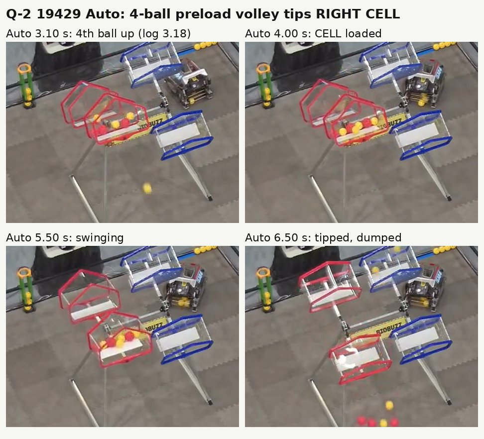
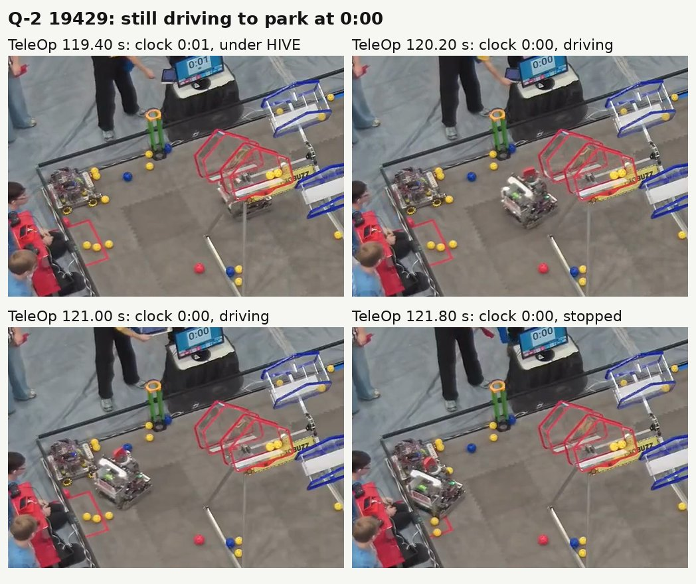
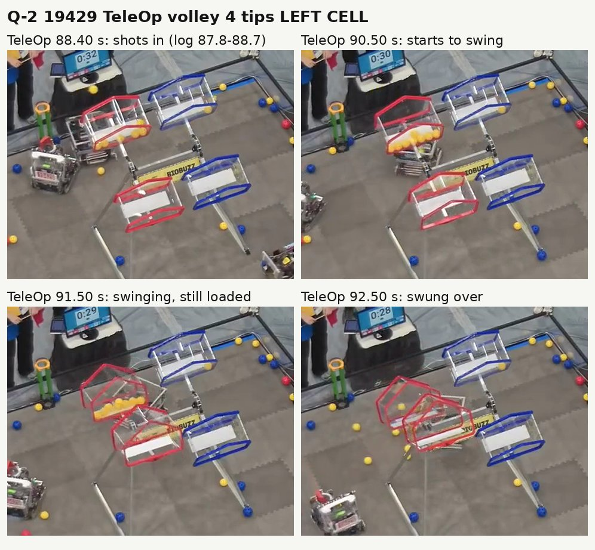
--play-at 41.5 (Auto PLAY = 41.50 s into video.mp4). The helper's "our light" sync (42.45 s) is wrong. Its light pixel was at (256,292), not on our robot (bottom of the field, about 600,390). It measured green 0.15 s after "PLAY", but the log's first Lane FULL is 0.93 s after PLAY, and switch − PLAY came out 28.45 s.| card (log start) | log says | video shows | agree? |
|---|---|---|---|
| SpinUp + path to RIGHT_AUTO_HIVE (0.0) | 1.58 s drive, gate opened on the approach | Robot drives up from the start | yes |
| LaunchAll (1.6) | 4 counted, fed 2.16 s, ended at the 4th shot | 4 balls, the last in the air at 3.1 s | yes |
| (RIGHT CELL) | not logged as a TIP | RIGHT CELL starts to swing about 5 s, over and dumped by 6.5 s. TIP from our preloads. | n/a |
| path to WALL_FLOWER_STAGING (3.2), PickFlower red WALL (4.9) | stalled 2.6 in short, lane 0->0 | Robot at the WALL FLOWER 5-9 s. No pieces fired afterwards (below). | yes (pick got 0) |
| path BACKWARD to LEFT_AUTO_HIVE (8.7) | 4.23 s, crosses the field | Robot drives the length of the field to the left HIVE end | yes |
| Wait for TIP or CELL up (12.9) | CellUp after 0.03 s | n/a | n/a |
| LaunchAll (13.0) | 0 counted, "1 by dips", fed 3.52 s | No ball leaves in 13.0-16.2 s (empty robot) | counter right, dips wrong |
| path to SCORING_FLOWER_STAGING (16.6), PickFlower red SCORING (18.1) | stalled 1.0 in short, lane 0->1, Lane FULL | Robot at the SCORING FLOWER 18-21 s. Got at least 3 (next volley). | lane count low |
| LEFT CELL still up? (23.0) | CellUp after 0.07 s | LEFT CELL up | yes |
| LaunchAll (23.1) | 2 counted, "3 by dips", fed 3.51 s | 3 balls (about 23.9, 24.2, 24.6 s) into the LEFT CELL. No TIP in Auto. | counter undercounts by 1 (dips right) |
| path to RIGHT_PARK (26.7) | runs to 30 s, still at (18.1, 99.8) from 30.0 s | Driving 26.7-30 s, reaches the left end's red park square on the left side wall by 30 s | parked: yes, robot stopped at 30.0 s |
Auto summary on video: 7 balls fired (4 + 0 + 3). One TIP (the RIGHT CELL, from the preloads). WALL FLOWER pick got nothing, and the SCORING pick got 3.
| event (TeleOp s) | log says | video shows | agree? |
|---|---|---|---|
| volley 1 (11.2) | 1 shot. Second Circle at 12.3 fired nothing. | One ball toward the LEFT CELL at about 11.0 s. Robot partly out of the crop: exact count CAN'T TELL. | likely |
| volley 2 (35.1-35.6) | 2 shots | Balls at about 35.0 and 36.0 s. Exact count CAN'T TELL at this resolution. | likely |
| GARDEN gathers (42.3, 55.0) | stopped (sticks moved), RED_NECTAR rejected at 49.8 | Robot at the blue GARDEN corner 42-60 s | yes |
| Pinpoint FAULT_BAD_READ (57.5, 73.5) | READY again within 35 ms both times | Nothing visible | n/a |
| volley 3 (66.6) | 1 shot, arc turn first | One ball at about 66.4 s. Partner robot right beside ours. | likely |
| volley 4 (87.8-88.7) | 3 shots, from (45, 117) | 3 balls into the LEFT CELL (87.7, 88.1, 88.5 s). LEFT CELL tips 90.5-92.5 s (TIP lag about 2-3 s). | yes |
| FLOWER picks blue AUDIENCE (99.2, 100.9) | both stopped by the driver in LINE_UP/IN | Robot at the audience wall | yes |
| Lane FULL (105.8) | tracker 4 | Robot's light green at 106 s | yes |
| volley 5 (110.2-110.8) | 2 shots. Circles at 111.9 and 113.0 fed nothing. Lane ejected at 113.3. | At least 3 balls in the air 110.0-111.1 s, likely 4 (lane was full with 4). Exact count CAN'T TELL. | counter likely undercounts |
| endgame park (119-122) | drives from the audience wall to (13.1, 113.2), still by 122 s | Still driving at 0:00 (120.2 s). Stops on the red park square at about 121.8 s. | see Notable |
No contact problems, tipping of the robot, or stuck periods seen.
Log: events/2026-11-fruitport, 20245/matches/2026-11-21_11-12-37. Auto PLAY 191.246 s, TeleOp PLAY 229.181 s (+37.935). Times are seconds after that period's PLAY in the log unless marked "log". Alliance partner: 11531.
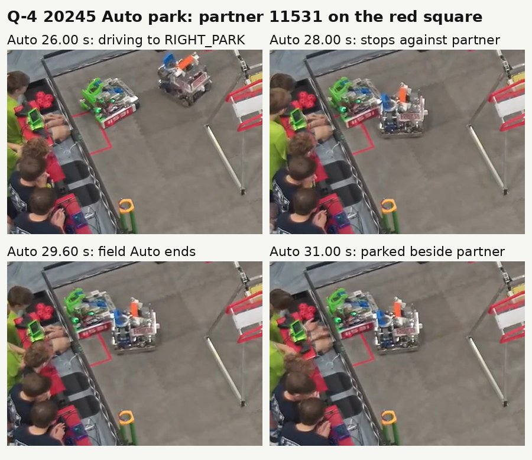
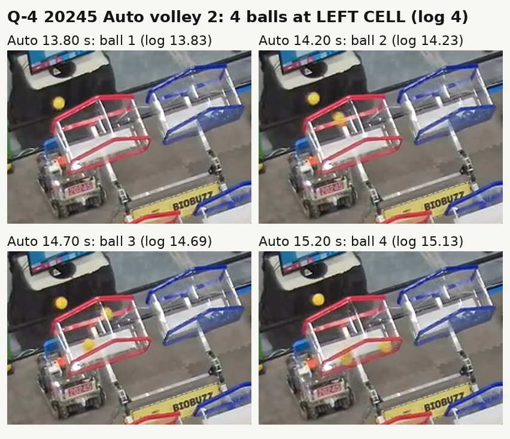
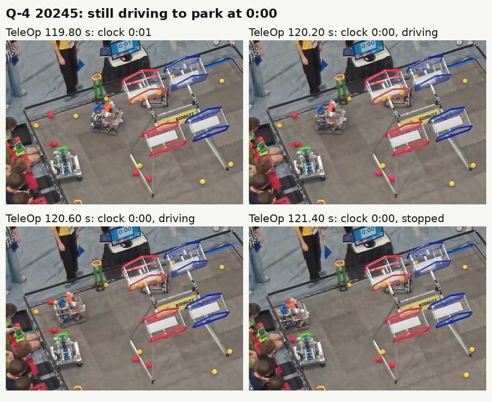
--play-at 41.2 (Auto PLAY = 41.20 s into video.mp4). The helper's "our light" sync (45.20 s) is wrong by 4.0 s. With it, the preload balls appear before PLAY and the robot "starts" at the time of the path to WALL_FLOWER_STAGING. switch − PLAY was 25.63 s.| card (log start) | log says | video shows | agree? |
|---|---|---|---|
| SpinUp + path to RIGHT_AUTO_HIVE (0.0) | 0.84 s | Short move up from the start | yes |
| LaunchAll (0.8) | 4 counted, fed 2.21 s, ended at the 4th shot | 4 balls (1.9, 2.4, 2.9, 3.3 s) into the RIGHT CELL | yes |
| (RIGHT CELL) | not logged as a TIP | CELL swings 4.5-6.0 s and is over and dumped by 6.5 s. TIP from our preloads. | n/a |
| path to WALL_FLOWER_STAGING (3.5), PickFlower red WALL (5.2) | stalled 1.4 in short, lane 0->3, Lane FULL | Robot leaves the HIVE at 4.1 s. The pick got 4 (next volley). | lane count 1 low |
| path BACKWARD to LEFT_AUTO_HIVE (8.9), Wait for TIP or CELL up (12.5) | 3.56 s drive, CellUp 0.02 s | Robot at the left HIVE end by 13 s | yes |
| LaunchAll (12.5) | 4 counted, "4 by dips", fed 2.19 s | 4 balls (13.8, 14.2, 14.7, 15.2 s) into the LEFT CELL. No TIP in Auto. | yes |
| path to SCORING_FLOWER_STAGING (15.1), PickFlower red SCORING (16.4) | stalled 4.7 in short, settled 5.8 in off the path end, lane 0->0 | Got nothing (next volley empty) | yes |
| LEFT CELL still up? (21.3), LaunchAll (21.4) | 0 shots, fed 3.52 s | No ball leaves 21.4-25.0 s | yes |
| path to RIGHT_PARK (25.0) | still at (22.9, 100.8) from 30.0 s | Partner 11531 already sits on the red park square. Our robot drives in and stops against it at 28 s, and sits beside it at 30-31 s. Whether it is inside the square: CAN'T TELL (the partner covers the square). | n/a |
Auto summary on video: 8 balls (4 + 4 + 0). One TIP (RIGHT CELL, preloads). WALL pick got 4 and the SCORING pick got 0. The last volley card spent 3.6 s feeding an empty robot.
| event (TeleOp s) | log says | video shows | agree? |
|---|---|---|---|
| GARDEN gather, red corner (3.2) | stopped (sticks moved), push into the wall | Robot at the near corner | yes |
| Lane FULL (11.3, tracker 2) | 2 counted | 3 in the lane by 14.8 (log POLLEN 3 at 14.8). Green on the robot about 11.3 s: partly out of frame, CAN'T TELL. | n/a |
| volley 1 (17.1-18.4), at the LEFT HIVE end | 4 shots | 4 balls (16.9, 17.3, 17.8, 18.2 s) into the LEFT CELL | yes |
| FLOWER pick red SCORING (19.5) | lane 0->3, stopped in DWELL | Robot at the left FLOWER | yes |
| volley 2 (28.8-30.1), right end | 4 shots | Balls rise from our robot 28.2-30.0 s, about 4. 11531 is beside it. Exact count CAN'T TELL. | likely |
| FLOWER pick blue AUDIENCE (34.4) | stopped in IN, lane 1 | n/a | n/a |
| volley 3 (41.1-42.4), right end | 4 shots, 3 of them "with the lane counted empty", lane had 1 | Balls in the air 40.9-42.6 s. At least 3 distinct, and the robot is next to 20862. Exact count CAN'T TELL. | count uncertain |
| LEFT CELL | n/a | Loaded at 45 s, tipped by 50 s. Our last LEFT shots were at 18.4 s, so not our volley directly. Who tipped it: CAN'T TELL. | n/a |
| volley 4 (52.3-53.7), from (85.8, 128.4) | 4 shots | Not checked frame by frame | n/a |
| GARDEN blue corner (56.0), push 2.38 s at (128.6, 127.0) | pinned against the wall with the stick down | n/a | n/a |
| Pinpoint FAULT_BAD_READ (64.9) | READY 12 ms later | n/a | n/a |
| volley 5 (79.2-80.1) | 3 shots | Not checked frame by frame | n/a |
| Lane FULL (86.2), eject (86.9), FULL again (88.1) "tracker counts 0" | eject reset the count. Then 5 shots, all "with the lane counted empty" | At least 4 balls leave our robot 88.5-90.9 s (right end, 11531 beside it). Count CAN'T TELL. | lane tracker wrong after the eject |
| volley 7 (95.5) | 1 shot | Not checked | n/a |
| RED_NECTAR ejected (104.0) | count reset | n/a | n/a |
| volley 8 (108.6-110.1), from (41.3, 120.8), LEFT end | 3 shots, last dip 158 | Not checked frame by frame | n/a |
| endgame park (111-121.5) | drives to the blue end (133.6, 129.9, jolt at 113.7) and back, still at (10.8, 123.9) from 121.5 | Still driving at 0:00 (120.2-120.6 s). Stopped by 121.4 s on the left side wall next to 11531. Inside the square: CAN'T TELL. | see Notable |
Log: events/2026-11-fruitport, 20245/matches/2026-11-21_11-58-05. Auto PLAY 39.861 s, TeleOp PLAY 77.994 s (+38.133). Times are seconds after that period's PLAY in the log unless marked "log". Different camera angle from Q-2/Q-4 (field 1).
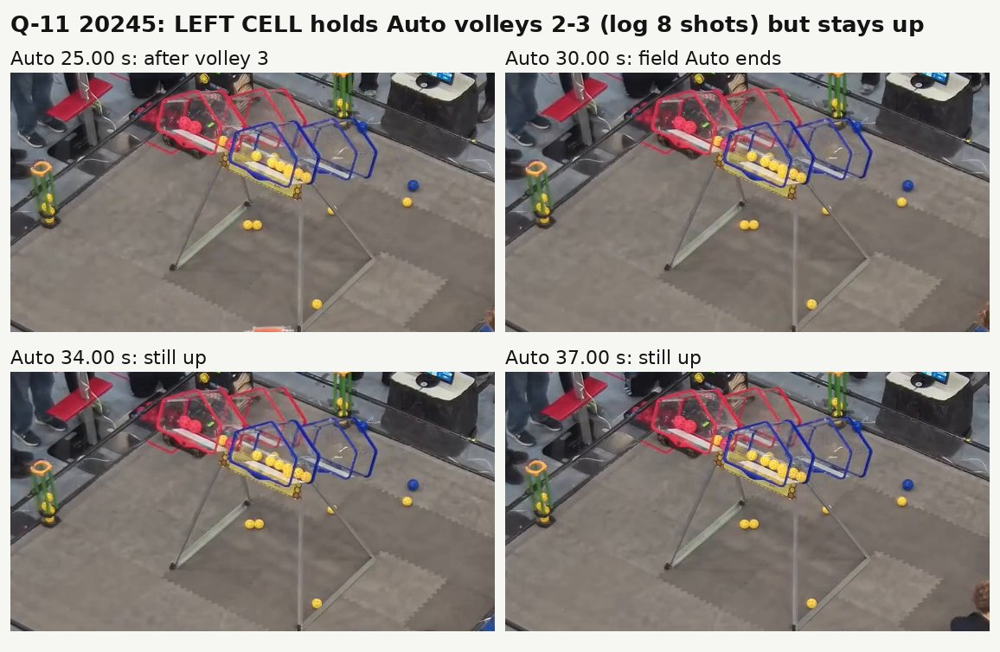
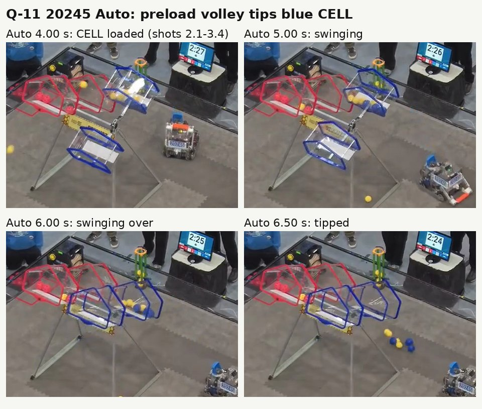
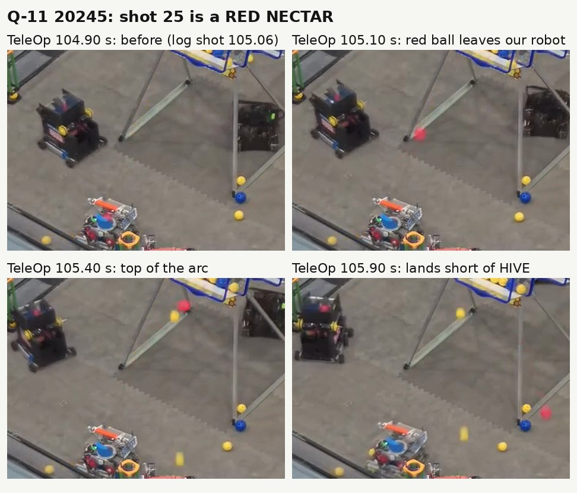
| card (log start) | log says | video shows | agree? |
|---|---|---|---|
| SpinUp + path to RIGHT_AUTO_HIVE (0.0) | 0.84 s | Short move to the HIVE | yes |
| LaunchAll (0.8) | 4 counted, fed 2.18 s | 4 balls (2.0-3.3 s) into the blue RIGHT CELL | yes |
| (RIGHT CELL) | not logged as a TIP | Swings 4.5-6.0 s, tipped and dumped by 6.5 s. TIP from our preloads. | n/a |
| path to WALL_FLOWER_STAGING (3.4), PickFlower blue WALL (5.3) | lane 1->4, stalled 1.7 in short | Pick got 4 (next volley) | yes |
| path BACKWARD to LEFT_AUTO_HIVE (9.1), Wait (12.6) | 3.49 s, CellUp 0.02 s | At the left end by 12.8 s | yes |
| LaunchAll (12.7) | 4 counted, 4 by dips | 4 balls (about 14.0, 14.45, 14.75, 15.05 s) into the LEFT CELL | yes |
| path to SCORING_FLOWER_STAGING (15.3), PickFlower blue AUDIENCE (16.6) | "squaring up", settled 9.25 in off the path end, stalled 2.4 in short, lane 0->2 | Robot at the audience FLOWER 16.6-20.3 s. Got 4 (next volley). | lane count 2 low |
| LEFT CELL still up? (21.5), LaunchAll (21.7) | 4 counted ("2 in the lane", 2 shots "with the lane counted empty"), fed 2.15 s | About 4 balls (22.5-24.0 s) into the LEFT CELL | yes (counter right, lane count low) |
| (LEFT CELL) | n/a | Holds about 8+ yellow after volley 3 and is still up at 37 s. No second TIP in Auto. | n/a |
| path to RIGHT_PARK (23.9) | at (119.9, 42.0) from 26.5 s | Drives to the blue wall by the drive team and stops beside the partner robot by 26-28 s. The partner robot shifts at 28 s (contact?): CAN'T TELL. Inside the park square: CAN'T TELL (referee and drive team in front). | n/a |
Auto summary on video: 12 balls (4 + 4 + 4), the best of these three matches. One TIP (RIGHT CELL). Both FLOWER picks got 4.
| event (TeleOp s) | log says | video shows | agree? |
|---|---|---|---|
| FLOWER pick red WALL (1.9) | lane 0->1, then 2. Lane FULL at 5.1 and 6.6. | n/a | n/a |
| volley 1 (13.8-15.1), right end, (83.8, 129.7) | 4 shots | 4 balls (13.75, 14.1, 14.5, 15.0) into the blue RIGHT CELL | yes |
| FLOWER pick red SCORING (16.7) | lane 0->3 | n/a | n/a |
| volley 2 (23.4-24.3) | 3 shots | 3 balls rising (23.3, 23.7, 24.2). A 4th: CAN'T TELL. | yes |
| Lane FULL (34.1) | tracker 4, two "arrived with the lane counted full" | n/a | n/a |
| volley 3 (37.7-39.0), left end, (56.2, 22.9) | 4 shots | Many balls into the blue LEFT CELL 37.1-39.0 s, partner robot alongside. Ours at least 4. Exact attribution CAN'T TELL. | likely |
| volley 4 (48.5) | 1 shot, dip 3 ticks/s. A second Circle at 50.0 fired nothing. | Not checked | likely a false shot (dip 3) |
| GARDEN blue corner (52.1) | BLUE_NECTAR in, ejected. Lane FULL at 57.3 "tracker counts 0". | n/a | n/a |
| volley 5 (62.0-63.7), (103.9, 120.2) | 4 shots, all "with the lane counted empty" | Balls rise from our robot beside the pink partner robot. Count CAN'T TELL. | n/a |
| volley 6 (71.0-71.9), (113.1, 128.9), aim +40° BLOCK at the press | 3 shots | Balls rise, count CAN'T TELL | n/a |
| volley 7 (90.4-92.0), left end, (80.9, 10.6) | 4 shots (2 "lane counted empty") | At least 3 balls from our robot toward the LEFT CELL 90.3-92.0 s. Exact count CAN'T TELL. | likely |
| GARDEN red corner (94.6), NECTAR rejects (97.5, 98.7) | "Lane: FULL with a rejected NECTAR under the sensor: a reject did not clear it" | n/a | n/a |
| shot 24 (103.4) | lane counted empty | CAN'T TELL | n/a |
| shot 25 (105.06), dip 269 | lane counted empty | A RED NECTAR leaves our robot (105.0-105.1 s), arcs up and lands short of the HIVE by 105.9 s | see Notable |
| endgame park (108-121) | drives along the blue wall to (126.5, 52.7), still from about 121 s | Drives behind our own drive team, stops by the referee about 121 s. Still moving after 0:00, as in Q-2 and Q-4. Inside the square: CAN'T TELL (people in front). | n/a |
Log: origin/events/2026-11-fruitport:19429/matches/2026-11-21_13-23-03_R-Solo_11-19_10_35PM.wpilog.gz. Times are seconds after that period's PLAY in the log (A = Auto, T = TeleOp).
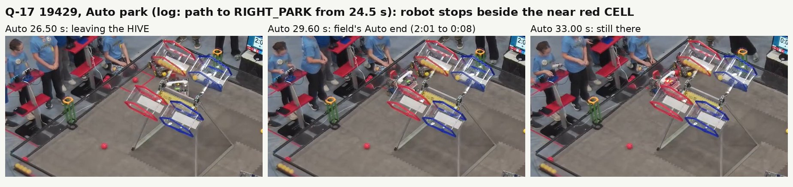
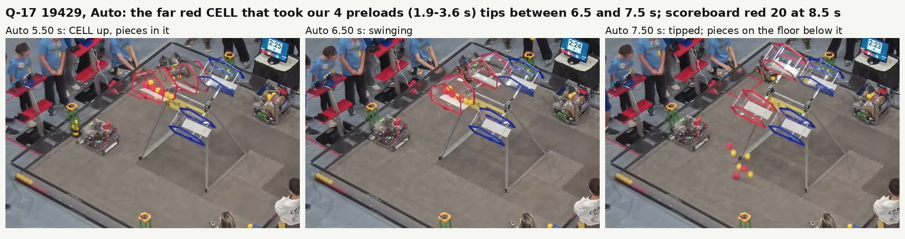
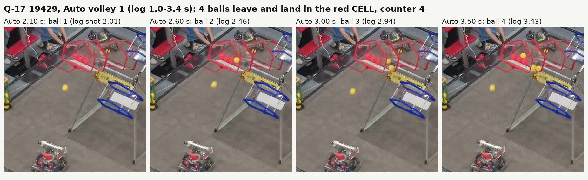
--play-at 39.68 (Auto PLAY = 39.68 s in video.mp4). That is 0.80 s after the scoreboard estimate (switch 69.33 - 30.45 = 38.88): our PLAY was about 0.8 s after the field's start.Lane: FULL is at A 0.95, so green appears about 0.1 s after the log, as expected. The robot starts to roll at about A 1.05.Card (log steps) | Log says | Video shows | Agree? |
|---|---|---|---|
| SpinUp + path to RIGHT_AUTO_HIVE (A 0.0-1.05) | drives up while spinning up | rolls from about A 1.05 a short way toward the HIVE | yes |
| LaunchAll (A 1.0-3.4) | gate 0.09 s, 4 counted, lane 4->0 | 4 balls, leaving at about 1.9 / 2.4 / 2.8 / 3.3, all 4 land in the far red CELL (4 yellow in it at A 3.9-4.2) | yes |
| path to WALL_FLOWER_STAGING (3.4-5.1) | drives to the FLOWER by the red drivers' side wall | yes | |
| PickFlower WALL (5.1-8.4) | stalled 0.9 in short; lane 0->2; FULL at 7.63 | robot at the FLOWER at 5.5-7.5; green light on by 8.5 | yes for "got pieces"; how many: CAN'T TELL |
| (TIP) | the far red CELL with our 4 preloads swings at A 6.5 and is tipped by 7.5; red score 0 -> 20 and the CELL count 0/4 -> 1/4 between A 7.0 and 8.5. Our 4 were the only pieces seen going in, but the partner's (20862) shots during 0-6 s are not checked: whose TIP it is, CAN'T TELL for certain | TIP: yes | |
| path BACKWARD to LEFT_AUTO_HIVE (8.4-12.0) | 3.64 s | drives behind the HIVE to the scoring-table side, green light on | yes |
| Wait for TIP or CELL up (12.0) | CellUp after 0.02 s | n/a | |
| LaunchAll (12.1-15.7) | 3.52 s, fed to the full timer; counter 1, dips 3, lane 2->1 | green off at A 12.6 (log FULL cleared 12.69). Balls rise above the HIVE at about 13.0, 13.4-13.5, 13.9-14.1 and 14.4-14.6: 3 or 4 balls, but the robot is behind the CELLs and a blue robot (drum intake) is next to it, so the exact count and whether all are ours: CAN'T TELL. No TIP follows (score stays 20) | counter's 1 is too low; dips' 3 fits |
| path to SCORING_FLOWER_STAGING (15.7-17.3) | robot along the scoring-table wall | yes | |
| PickFlower SCORING (17.3-21.2) | stalled 1.0 in short; lane 1->3; FULL at 21.69 | robot at the scoring-table FLOWER; green on by A 22.5-22.6 | yes; pieces: CAN'T TELL |
| path to LEFT_AUTO_HIVE (21.2-22.7) | yes | ||
| LEFT CELL still up? (22.7) | CellUp after 0.03 s | n/a | |
| LaunchAll (22.7-24.5) | gate 0.09 s; 4 counted, 4 dips, lane 3->0 | green off at A 23.1-23.2; balls rising at about 23.6, 24.1, 24.5; a first ball near 23.0 not seen (behind the CELL frames). At least 3, CAN'T TELL whether 4. No TIP in Auto (score stays 20) | at least 3 of 4 confirmed |
| path to RIGHT_PARK (24.5-30) | last card, end not logged | leaves the HIVE at 25-26.5, stops beside the near red CELL by the red drivers' wall by A 28 and is still there at the field's Auto end (A 29.65) and at A 33. Whether that is inside the PARK zone: CAN'T TELL from this angle. Red went 20 -> 28 after Auto (the 8 includes park/leave points; split CAN'T TELL) | parked: yes; zone: CAN'T TELL |
OpMode stopped at A 29.98 (log), 0.33 s after the field's Auto end: within the field's period.
TeleOp PLAY log 282.85 s (video 78.01). The stream zooms out at about T 31; after that our robot is small and shot counts are mostly CAN'T TELL.
| Time (T) | Log says | Video shows | Agree? |
|---|---|---|---|
| 1.7-7.5 | GARDEN gathers at the blue GARDEN corner, all stopped by the driver; 2 POLLEN in | CAN'T TELL (not checked closely) | - |
| 13.9-15.9 volley 1 | fire at (67.8, 130.5); 2 counted (15.23, 15.69); 3 in the lane before | robot behind the HIVE on the scoring-table side; one ball rising at T 15.2, another at 15.6; a third in the air at about 16.1 may be a new ball or the 2nd again: 2 sure, 3rd CAN'T TELL | 2: yes |
| 21.6-25 | FLOWER pick (blue AUDIENCE FLOWER), lane 1->3 | not checked | - |
| 25.81-29.99 Lane FULL | piece under the sensor, 3 counted | green on at T 25.9, robot driving toward the HIVE | yes (light) |
| 27.5-31.9 volley 2 | 4 counted (29.82, 30.33, 31.13, 31.62), one "shot with the lane counted empty" | balls leave at T 29.75 and 30.2; from 30.8 to 31.7 balls come back down off the HIVE toward the robot (rebounds or misses); exact count CAN'T TELL | partly |
| 38.4-41.2 volley 3 | 3 counted | robot at the audience-side, balls in the air toward the HIVE at 39.8, 40.2, 40.8; count CAN'T TELL (wide shot) | partly |
| 47.7-49.4 volley 4 | 1 counted | not checked | - |
| 52.4-55.9 | GARDEN gather, red GARDEN, 2 in | not checked | - |
| 58.3-61.6 volley 5 | 3 counted at (25.5, 10.6) | not checked; the red CELLs move at about T 62-65 (a TIP, whose: CAN'T TELL) | - |
| 62.7-65.4 | 2 RED_NECTAR rejects; a feed with no shot; launcher falls to 60-80 ticks/s, battery 8.60 V at its spin-up (T 65.4) | not checked | - |
| 80.82-84.67 Lane FULL | 4 counted in | not checked | - |
| 83.8-86.3 volley 6 | 4 counted | wide shot, robot not picked out: CAN'T TELL | - |
| 89.8-92 | FLOWER pick (blue WALL FLOWER), 1 in | robot by the scoring-table FLOWER at T 89-90 | yes |
| 93.58-97.84 Lane FULL, tracker counts 1 | FULL with only 1 counted, then driver's Circle twice (blocked: speed), then ejected at 97.84, launcher at 190 ticks/s at T 98.2 | green on at T 94.5-97.3 while the robot is pushed into the blue end of the HIVE (blue drum robot alongside at T 93.5-94.5); green off by 97.9. What was in the intake: CAN'T TELL | FULL: yes |
| 108.1-110.3 volley 7 | 3 counted at (77.6, 133.4) | not counted (wide shot) | - |
| 105, 120.3, 122.1 | pushes against walls; at T 120.3-122.1 at (11.6, 126-128), 3.5 in off a wall | CAN'T TELL; end-of-match position by the red end of the HIVE not confirmed | - |
Log totals: 7 TeleOp volleys, 20 counted shots (log 407.9 s). Pinpoint: three single-loop FAULT_BAD_READ (A 7.9, T 9.7, T 93.3), each READY again in under 25 ms; no lost pose.
1. Auto volley 2 (A 12.1-15.7): counter 1, video 3-4 balls in the air, dips 3. The counter undercounts again right after a FLOWER pick; the dips number fits the video better. 2. Auto volley 3 (A 22.7-24.5): log 4, video at least 3 (the first ball is hidden). Not a disagreement so much as a limit of the angle. 3. TeleOp volley 2 (T 29.8-31.6): log 4 counted; video shows balls falling back from the HIVE at 30.8-31.7: "counted" is not "scored".
Log: origin/events/2026-11-fruitport:20245/matches/2026-11-21_13-34-34_R-Solo_11-19_10_35PM.wpilog.gz. Times are seconds after that period's PLAY in the log (A = Auto, T = TeleOp). This match is on field 2 (a different camera angle from Q-17 and Q-23).
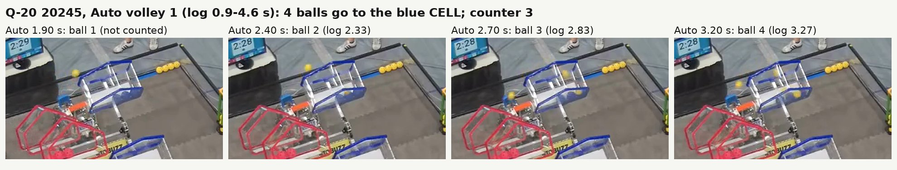
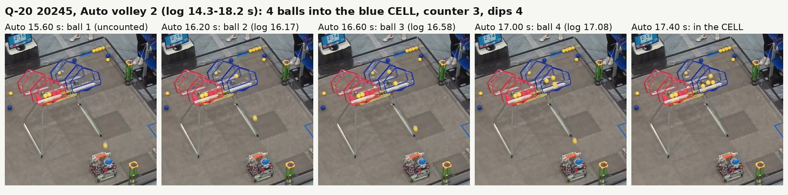
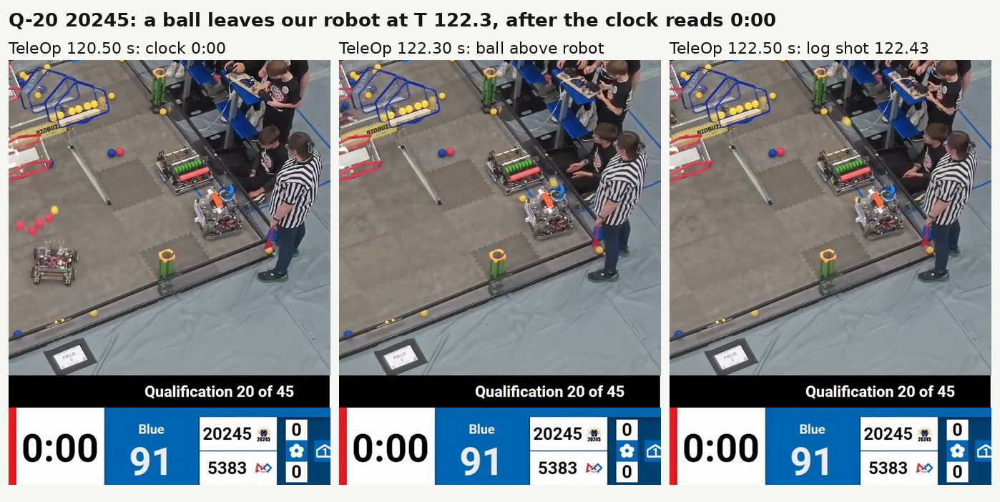
--play-at 39.40 (Auto PLAY = 39.40 s in video.mp4), 0.55 s after the scoreboard estimate (38.85).Card (log steps) | Log says | Video shows | Agree? |
|---|---|---|---|
| SpinUp + path to RIGHT_AUTO_HIVE (A 0.0-0.88) | rolls from behind the near blue CELL up to the HIVE at once | yes | |
| LaunchAll (A 0.9-4.6) | fed the full 3.50 s; 3 counted, dips "from a standstill"; lane 4->1 | 4 balls, leaving at about 1.8-1.9, 2.4, 2.7, 3.2, all toward the blue CELL by the scoring table, yellow pieces in it after. The first ball leaves about 0.5 s before the first counted shot and is the one the counter misses | counter low by 1; lane "4->1" is wrong, the lane emptied |
| (TIP) | that blue CELL swings at about A 6-7 and blue goes 0 -> 20 between A 7 and 8. Only our shots were seen going in (the partner 5383 was not checked for shots) | TIP: yes | |
| path to WALL_FLOWER_STAGING (4.6-6.5) | drives to the FLOWER in the corner by the blue drivers | yes | |
| PickFlower WALL (6.5-10.5) | stalled 1.4 in short; lane 1->4 (the 1 was really 0); FULL at 12.53 | at the FLOWER at about A 9-11; green on at 12.65 | got pieces: yes; how many: CAN'T TELL (volley 2 fired 4, so 4) |
| path BACKWARD to LEFT_AUTO_HIVE (10.5-14.3) | 3.86 s | backs across the field to the audience side of the HIVE | yes |
| Wait for TIP or CELL up (14.3) | CellUp after 0.02 s | n/a | |
| LaunchAll (14.3-18.2) | fed 3.51 s; 3 counted, 4 dips; lane 4->2 | green off at 15.2; 4 balls leave at about 15.6, 16.2, 16.6, 17.0, all into the same blue CELL (4 yellow in it at 17.4). First ball again uncounted | counter low by 1; dips right; lane "->2" wrong |
| (guard) | "6.6 s of cards to the next volley ... end at 30.6 s: no time to park after it, parking now" at A 18.2 | n/a | |
| path BACKWARD to LEFT_AUTO_HIVE park (18.2-30) | path end at A 20.6 at (127.0, 42.8); 2 "UNKNOWN" pieces taken in on the way (lane 2->4) | robot shuffles a short way at the audience side of the HIVE (A 18-20) and stays there to the end of Auto. In a PARK zone: CAN'T TELL. Blue 20 at the field's Auto end, 31 at A 35 (11 more for parks/leave, split CAN'T TELL) | stayed: yes |
No second TIP in Auto: blue stays 20 from A 8 to the end of Auto.
TeleOp PLAY log 61.54 s (video 77.25). Field 2's stream stays wide; our robot (blue top, orange bar) is small, so most counts below are not checked.
| Time (T) | Log says | Video shows | Agree? |
|---|---|---|---|
| 1.1-4.1 | FLOWER pick (blue AUDIENCE), stopped by the driver in BACK; lane 0->2 | not checked | - |
| 5.05-5.83 Lane FULL | tracker 2 | green T 5.2-5.9 | yes |
| 5.5-8.2 volley 1 | fire at (78.4, 17.8); 4 counted (6.89, 7.25, 7.76, 8.21) | 4 balls at 6.8, 7.2, 7.8, 8.2 toward the blue CELLs; blue 31 -> 51 between T 7 and T 14 (a TIP) | yes |
| 13.97-14.49, 15.78-19.77 Lane FULL | trackers 1 and 2 | not checked | - |
| 18.6-21.5 volley 2 | 4 counted | not checked | - |
| 34.8-35.6, 43.4-43.8, 56.2-57.5, 67.0-67.9 volleys 3-6 | 3, 2, 3, 3 counted | not checked; blue 51 -> 71 between T 67.5 and 81.5 | - |
| 81.0-82.4, 93.1-94.4, 108.2-109.5 volleys 7-9 | 4, 4, 4 counted | not checked; blue 71 -> 91 between T 93.5 and 108.5 | - |
| 11.1, 23.3, 28.7 | FLOWER picks at the red WALL (0->1) and twice at the red SCORING FLOWER (0->0, no push end), all stopped by the driver | not checked | - |
| 114.7, 116.1 | fire, 1 shot | not checked | - |
| 121.9-122.4 | driver's Circle at T 121.89 "fired"; shot 33 at T 122.43; log ends T 123.0 | a ball leaves our robot at T 122.3 and is in the air at 122.5, while the scoreboard reads 0:00 (0:00 from about T 120.3). Robot is by the blue drivers' wall next to the referee | yes, and it is after the buzzer |
| Endgame | robot by the blue drivers' wall at the end; in a PARK zone: CAN'T TELL | - |
Log totals: 11 TeleOp volleys, 33 counted shots. Pinpoint: one single-loop FAULT_BAD_READ at T 104.1, READY in 13 ms; no lost pose. Final score on the stream: Blue 91, Red 76.
1. Auto volley 1 (A 0.9-4.6): log 3 counted, video 4 balls. The first ball (about A 1.8-1.9) is not counted; the lane count says 1 left when the lane was empty, and the next pick then logs 1->4. 2. Auto volley 2 (A 14.3-18.2): log 3 counted (dips 4), video 4 balls, again the first one missed; lane "4->2" should be 4->0. 3. Lane counts in the park path: 2->4 "UNKNOWN in" during the park while the lane was really 0 after volley 2: the count was already 2 too high, so what came in is CAN'T TELL.
Log: origin/events/2026-11-fruitport:19429/matches/2026-11-21_13-53-40_R-Solo_11-19_10_35PM.wpilog.gz. Times are seconds after that period's PLAY in the log (A = Auto, T = TeleOp). Field 1 (same angle as Q-17). TeleOp OpMode: "Basic Drive".
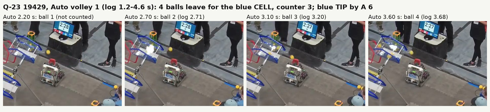
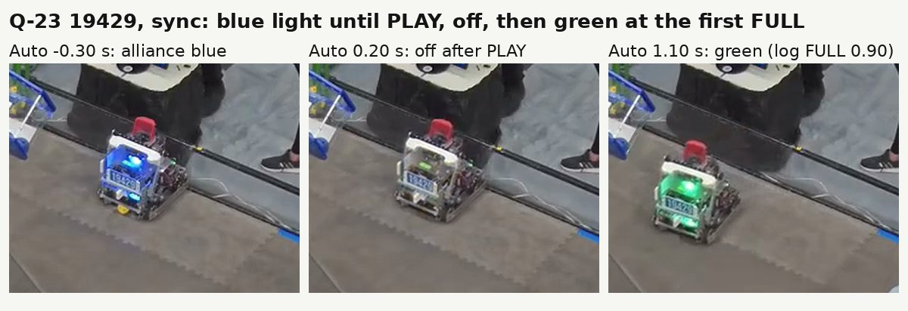
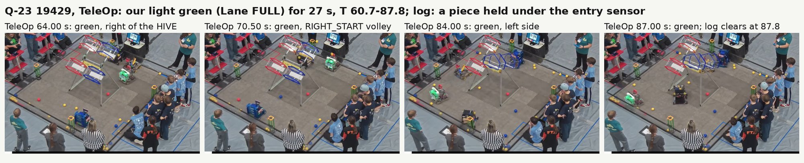
TURRET_ENCODER_HOST's socket) failed is a robot check, not something the log or video settles. Compare Q-17 earlier the same day, where the turret ranged -139 to +162 deg on the same robot.--play-at 39.55 (Auto PLAY = 39.55 s in video.mp4), 0.67 s after the scoreboard estimate (38.88).Lane: FULL at A 0.90, and goes off at A 2.1 against the log's 2.06.Card (log steps) | Log says | Video shows | Agree? |
|---|---|---|---|
| SpinUp + path to RIGHT_AUTO_HIVE (A 0.0-1.17) | gate opened on the approach | rolls from about A 0.2 to the scoring-table side of the HIVE | yes |
| LaunchAll (A 1.2-4.6) | fed the full 3.51 s; 3 counted; lane 4->1 | 4 balls, leaving at about 2.15, 2.65, 3.1, 3.6 toward the blue CELL by the scoring table. The first is not counted (the same pattern as Q-20) | counter low by 1 |
| (TIP) | blue 0 -> 20 between A 5 and A 6 and the blue CELL count goes to 1/4; only our shots were seen going in (partner 15510 not checked) | TIP: yes | |
| path to WALL_FLOWER_STAGING (4.6-6.3) | to the FLOWER in the corner by the blue drivers | yes | |
| PickFlower WALL (6.3-10.2) | stalled 1.2 in short; lane 1->4; FULL at 10.06 | at the FLOWER; green on from about A 10.1 | got pieces: yes; how many: CAN'T TELL |
| path BACKWARD to LEFT_AUTO_HIVE (10.2-13.8) | ends at (80.1, 21.0) | backs to the audience side of the HIVE | yes |
| Wait for TIP or CELL up (13.8) | CellUp after 0.02 s | n/a | |
| LaunchAll (13.8-17.6) | fed 3.51 s; 3 counted, 5 dips; lane 4->1 | green off by 14.6; balls rising at about 15.0, 15.4, 15.8 and 16.2, into the blue CELL (yellow pieces in it at 16.6-17.6). 4 seen; a 5th: CAN'T TELL | counter low; dips may be high by 1 |
| path to SCORING_FLOWER_STAGING (17.6-19.0) | toward the audience wall | yes | |
| (guard) | "5.3 s of cards to the next volley ... end at 30.1 s: no time to park after it, parking now" at A 19.0 | n/a | |
| path to SCORING_FLOWER_STAGING park (19.0-30) | path end at A 19.0 at (94.3, 22.2) | robot stays by the audience wall near the FLOWER there from A 19 to the end of Auto. In a PARK zone: CAN'T TELL. Blue 20 at the field's Auto end, 23 at A 31, 28 at A 34 | stayed: yes |
No second TIP in Auto (blue 20 from A 6 to the end of Auto).
TeleOp PLAY log 220.68 s (video 78.02). Wide shot, robot small; ball counts mostly CAN'T TELL.
| Time (T) | Log says | Video shows | Agree? |
|---|---|---|---|
| 0.69 | turret hold dropped: commanded -0.43 to -1.0 power toward a target 50-78 deg away, angle stayed at -1.3 deg, then target and power go NaN; /Turret/AngleDeg stays between -2 and -1 deg for the rest of TeleOp (in Q-17 it ranged -139 to +162). Every fire after says "aim unknown (turret dropped the hold ...)" and fires with the turret where it is | whether the turret turned: CAN'T TELL at this size | - |
| 1.1-3.1 | FLOWER pick, blue AUDIENCE, stopped in DWELL; 1 in | not checked | - |
| 6.1-8.3 volley 1 | 3 counted (7.41, 7.87, 8.28), aim unknown | not checked | - |
| 11.3-12.1 volley 2 | 1 counted | not checked | - |
| 16.1-17.9 | FLOWER pick, red SCORING FLOWER (on the blue alliance), 0->1 | not checked | - |
| 22.15-24.49 Lane FULL | tracker 3 | green T 22.3-24.4 | yes |
| 23.5-26.1 volley 3 | 4 counted (24.70, 25.21, 25.63, 26.08) | balls rising from the robot at about 24.7, 24.9 and 25.7-26.3 next to the HIVE's blue end, another robot alongside; count CAN'T TELL. Blue went 28 -> 48 between T 12 and T 22, before this volley | partly |
| 36.1-36.9 volley 4 | 1 counted | not checked | - |
| 43.5-44.2 volley 5 | 2 counted | not checked | - |
| 50.1-54.1 | FLOWER picks, red WALL FLOWER, 0 pieces, stopped by the driver | not checked | - |
| 60.71-87.77 Lane FULL (27 s) | tracker 1; "piece under the sensor" from about T 59 | our light green at T 64, 69.5, 70.5, 76, 80, 84, 87 (robot driving all over the field), white at 88.5 | FULL light: yes; what is under the sensor: CAN'T TELL |
| 64.9-66.9 volley 6 | 1 counted at (107.9, 120.4) | not checked | - |
| 68.0-72.1 volley 7 | launch spot RIGHT_START, arrived 0.85 s, gate open 3.31 s, 4 counted with the lane tracker at 0 | robot green at its RIGHT_START volley (T 70.5); balls not counted | - |
| 91.6-96.8 | Circle (aim unknown), launch spot LEFT_WALL_FAR twice: the first let go early, the second opened the gate 1.50 s, 0 shots | not checked | - |
| 92.18-96.81, 100.50-103.48, 104.80-112.02 Lane FULL | "piece under the sensor" 32.5 s, 40.8 s, 45.1 s, then "cleared after 52.3 s", tracker 0 | green at T 93, 108, 111; white at 100 and 115 | yes |
| 103.8 | Circle with the launcher at 190 ticks/s, no shot | not checked | - |
| 111.0 | push 0.69 s at (9.4, 10.6), 1.3 in off a wall | robot in a corner at T 111, green | yes |
| Endgame | robot by the audience wall at the blue end, next to the referee, at T 119-121. In a PARK zone: CAN'T TELL | - |
No counted shot after T 71.3: the last 49 s of TeleOp scored nothing from us by the log. Log totals: 7 TeleOp volleys, 16 counted shots. Pinpoint: three single-loop FAULT_BAD_READ (T 21.5, 64.6, 82.4), each READY in under 30 ms; no lost pose. Final: Blue 68, Red 31.
1. Auto volley 1 (A 1.2-4.6): log 3, video 4. First ball not counted; lane "4->1" was really 4->0, so the pick then logs "1->4". 2. Auto volley 2 (A 13.8-17.6): counter 3, dips 5, video 4 (a 5th not seen; CAN'T TELL).
Log: events/2026-11-fruitport:19429/matches/2026-11-21_14-20-15_R-Solo_11-19_10_35PM.wpilog.gz (R-Solo, build Fruitport @ 7edec46c31). Our two robots played each other in this match: 20245 was Red. Same footage as Q-28 20245. This file starts 1.5 s earlier in the stream than 20245's, so file times here = 20245 file times + 1.5. Times: Auto s / TeleOp s = seconds after that period's PLAY in the log; file = seconds into USMIFRQ2_Q-28_19429.mp4.
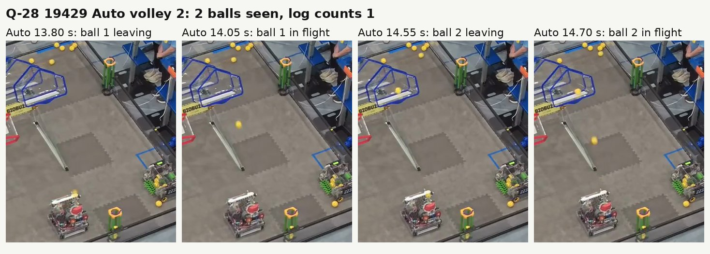
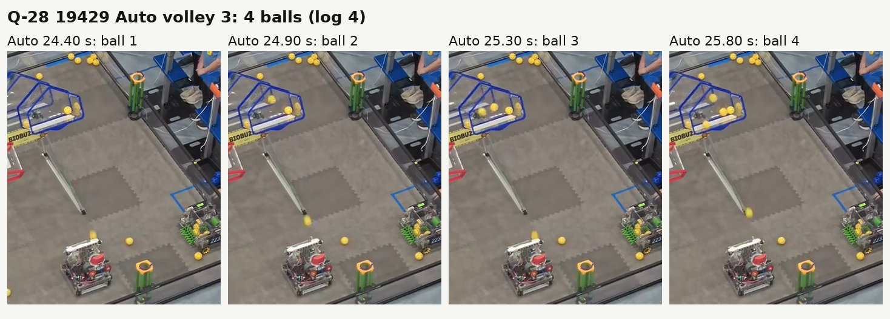
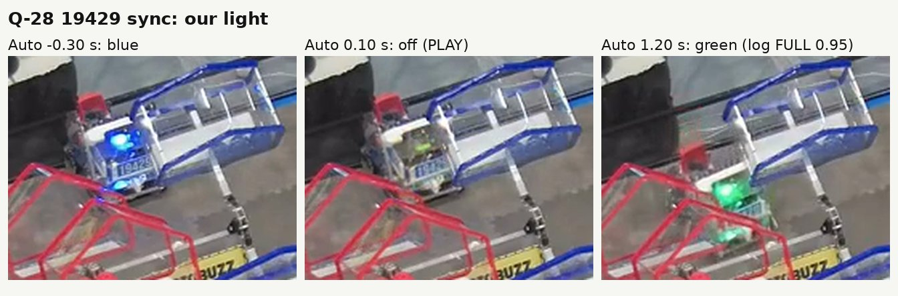
--play-at 41.0.R-Solo, mirrored for Blue: preloads at the RIGHT CELL from RIGHT_AUTO_HIVE; picks at the blue WALL FLOWER and the blue AUDIENCE FLOWER; volleys 2 and 3 at the LEFT CELL from LEFT_AUTO_HIVE; then park at RIGHT_PARK.
| Card (Auto s) | Log says | Video shows | Agree? |
|---|---|---|---|
| SpinUp + path to RIGHT_AUTO_HIVE (0.0–1.3) | gate opened on the approach, 4.1 in from the path end | drives up while spinning | yes |
| LaunchAll preloads (1.3–3.1) | 4 counted (1.75, 2.25, 2.67, 3.14), lane 4→0 | balls leave from ~1.7, at least 3 in flight by ~2.2 | full count not confirmed on video |
| RIGHT CELL TIP | – | blue TIP counter 0→1/4 and blue 0→20 at file ~47.5 (Auto ~6.5), ~3.5 s after the last ball | consistent, most likely ours |
| path + PickFlower blue WALL (3.1–8.8) | IN 1.10 s, stalled 1.2 in short, dwell 2.00, lane 0→3 | the pick happens; the count can't be seen | count CAN'T TELL |
| path BACKWARD to LEFT_AUTO_HIVE, CELL check (8.8–12.6) | CellUp after 0.02 s | crosses to the left end | yes |
| LaunchAll (12.6–16.6) | gate open 13.1; 1 shot counted; dips: "3"; fed the full 3.51 s ("NATURALLY", not ended by the counter); lane 3→2 | 2 balls: one leaves at ~13.85, one at ~14.55; nothing more from 15.1 to the end of the feed at 16.6, then the robot leaves | no: the log undercounts (1 vs 2). The robot also kept at least one piece while the feed ran ~1.5 s without firing |
| path + PickFlower blue AUDIENCE (16.6–22.1) | IN 1.12 s, stalled 1.6 in short, dwell 2.01, lane 2→4 | – | count CAN'T TELL |
| path to LEFT_AUTO_HIVE, CELL check (22.1–23.7) | CellUp after 0.30 s | – | – |
| LaunchAll (23.7–25.9) | 4 counted, 4 by dips, lane 4→0 | 4 balls into the LEFT CELL at 24.4–25.8 (still) | yes |
| LEFT CELL TIP | – | the blue TIP counter stays at 1/4 through Auto | no Auto TIP at the LEFT CELL |
| path to RIGHT_PARK (25.9–) | pose reaches (127.6, 42.7) at ~29.0 s (blue's RIGHT_PARK, mirrored (14.5, 98.7)) | a robot is at the blue side wall at the right end at the end of Auto (20245 file 68.5–72.5). Blue gets +5 at file ~73 (33) | yes, parked, with ~1 s to spare |
TeleOp ran Basic Drive (TeleOp PLAY = log 114.5 s). The log's volley table counts 8 volleys and 17 shots.
| Event (TeleOp s) | Log says | Video shows | Agree? |
|---|---|---|---|
| 2.6–8.5 | REJECT RED_NECTAR ×2 at the entrance; jolts at the wall | – | not checked |
| GARDEN gather 15.3–20.6 | 2 starts stopped by the sticks, then LINE_UP stalled against the wall, IN stalled 2.2 in short, DWELL stopped by the sticks | robot at the blue GARDEN corner | yes |
| Lane FULL at 22.48 (tracker 4) | – | green at ~22.7 | yes |
| Volley 1 (27.8–30.5) | spin-up from 0 (launcher was off), 3 shots (29.62, 30.03, 30.47) | 3–4 balls into the blue LEFT CELL area at ~29.1–30.7 | about 3; fourth not certain |
| Lane FULL at 45.19 (tracker 4); Volley 2 (47.2–49.8) | 4 shots (48.58, 48.95, 49.39, 49.83) | ~4 balls at ~48.2–49.9 | yes |
| Volley 3 (56.4–57.5) | 2 shots (57.09, 57.54) | – | not checked |
| Blue TIP 3 | – | blue 2→3/4 (53→73) at 20245 file ~140 (TeleOp ~59) | consistent with volley 3 (~2 s), or volley 2 |
| Lane FULL 79.50 (tracker 3) | – | – | not checked |
| Volleys 4–7 (89.0–98.9) | Circle at aim −67.7° waited, then 2 shots (91.6, 92.2), 1 (94.1), 1 (96.1), 1 (98.9; launcher spun up from 260 at 98.1, battery 9.95 V) | single balls leave at ~91.6, 92.2 and ~98.9 from the right end. The robot is near the blue drivers' wall with other robots | yes, where visible |
| Blue TIP 4 | – | blue 3→4/7 (73→93) at 20245 file ~182 (TeleOp ~104) | consistent with volleys 4–7 |
| 104.1–105.8 | REJECT BLUE_NECTAR ×3 at the entrance (hue 199–222°) | – | not checked |
| Volley 8 (110.7–113.0) | aim +63.8° BLOCK, then 3 shots (112.07, 112.52, 112.97) | – | not checked |
| Endgame park | pose (131.2, 44.4) at TeleOp ~119.7 (blue's RIGHT_PARK area) | a robot is at the blue side wall at 0:00 | where it is: yes. PARK scored: CAN'T TELL (icons too small to attribute) |
| Odometry | Pinpoint FAULT_BAD_READ at TeleOp 69.4, 71.1, 89.0 and 115.0, each READY again within ~25 ms | no visible jump in driving | not lost |
Log: events/2026-11-fruitport:20245/matches/2026-11-21_14-13-02_R-Solo_11-19_10_35PM.wpilog.gz (R-Solo, build Fruitport @ 7edec46c31). Our two robots played each other in this match: 19429 was Blue. Same footage as Q-28 19429. This file's video starts 1.5 s later in the stream than 19429's. Times: Auto s / TeleOp s = seconds after that period's PLAY in the log; file = seconds into USMIFRQ2_Q-28_20245.mp4.
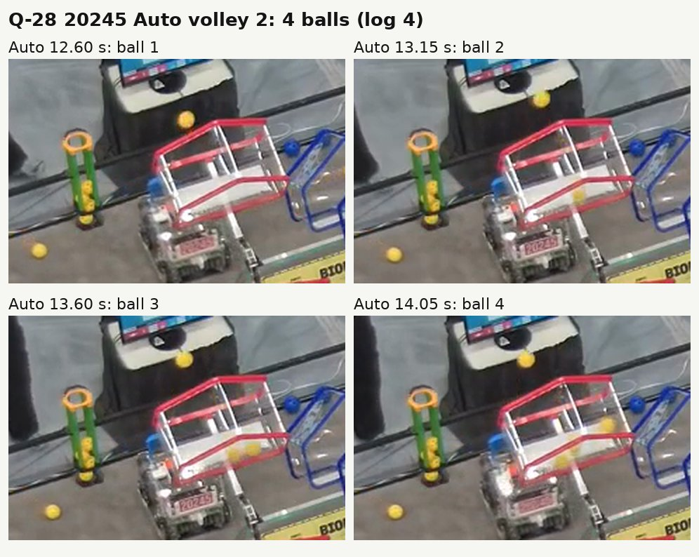
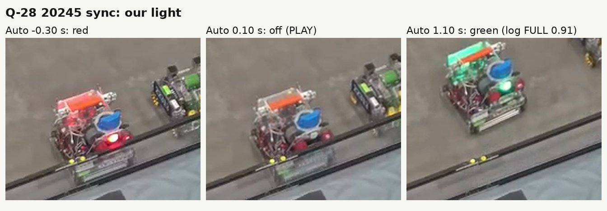
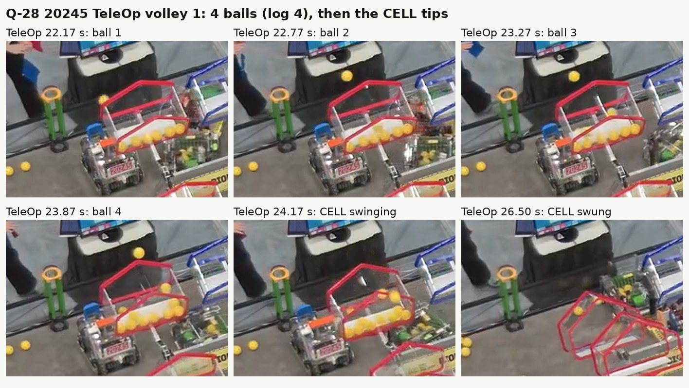
--play-at 39.5.The robot ran R-Solo: preloads from RIGHT_AUTO_HIVE, then two FLOWER picks, each fired at the LEFT CELL from LEFT_AUTO_HIVE, then park at RIGHT_PARK.
| Card (Auto s) | Log says | Video shows | Agree? |
|---|---|---|---|
| SpinUp + path to RIGHT_AUTO_HIVE (0.0–0.9) | arrives at 0.88 s | moves off its mark at ~0.2 s, short drive | yes |
| LaunchAll preloads (0.9–3.2) | 4 shots counted (1.75, 2.26, 2.74, 3.18), lane 4→0 | 4 balls leave at 1.6, 2.1, 2.6, 3.0 | yes |
| RIGHT CELL TIP | (no TIP event read) | red TIP counter goes 0→1/4 and red 0→20 at file ~46 (Auto ~6.5), ~3.3 s after the last ball. 19429's TIP lands on blue at the same moment | consistent, most likely ours |
| path to WALL_FLOWER_STAGING (3.2–4.9) | 1.70 s | drives to the red WALL FLOWER | yes |
| PickFlower WALL (4.9–8.1) | IN 0.86 s, stalled 1.6 in short, dwell 1.48, lane 0→2 | the pick happens; the piece count can't be seen | count CAN'T TELL |
| path BACKWARD to LEFT_AUTO_HIVE (8.1–11.3) | 3.26 s | crosses to the left end | yes |
| Wait for CELL up (11.3) | CellUp after 0.02 s | – | – |
| LaunchAll (11.3–13.9) | dips 12.73, 13.13, 13.63, 13.93: 4 by dips, 4 counted; lane 2→0 | 4 balls into the LEFT CELL (still) | yes. The lane count of 2 after the pick was low: the pick got 4 |
| path to SCORING_FLOWER_STAGING + PickFlower SCORING (13.9–18.7) | IN 0.91 s, stalled 2.8 in short, dwell 1.89, lane 0→2 | the pick happens | count CAN'T TELL |
| path to LEFT_AUTO_HIVE, CELL check, LaunchAll (18.7–22.3) | 4 by dips, 4 counted; lane 2→0 | 4 balls leave at Auto ~20.9–22.4 | yes. The lane count was low again |
| LEFT CELL TIP | – | the red TIP counter stays at 1/4 through Auto. The 8 balls in the LEFT CELL did not tip it in Auto | – |
| path to RIGHT_PARK (22.3–) | pose reaches (17.8, 98.8) by 25.0 s and holds at (16.8, 98.6) | a robot sits at the red side wall at the left end at the end of Auto (file 67.5–72.5). Red goes 28→33 (+5) at file ~70 | yes, parked |
TeleOp ran Basic Drive (TeleOp PLAY = log 88.0 s). The log's own volley table counts 6 volleys and 14 shots.
| Event (TeleOp s) | Log says | Video shows | Agree? |
|---|---|---|---|
| Intake, 2.1–6.2 | 3 POLLEN counted, then Lane FULL at 6.22 (tracker 3), "push" at (110.5, 88.7) | green at 6.4. The robot is pushing into the blue HIVE/CELL frame with pieces in the intake | FULL is real; the count of 3 was low (it fired 4) |
| Volley 1, Square → LEFT_CLOSE_HIVE (20.8–23.6) | arrived in 0.36 s, gate open 0.63 s after the press, 4 shots (22.24, 22.65, 23.11, 23.59) | 4 balls, then the LEFT CELL swings (still) | yes |
| LEFT CELL TIP (TIP 2) | – | red TIP counter 1→2/4 and red 33→53 at file ~107 (TeleOp ~29) | consistent with volley 1 |
| Intake 28.7–32.0 | 3 POLLEN in, then "ejected, count reset to 0" at 32.0 | – | not checked |
| Square → RIGHT_START (33.9) | let go early 19 in short; gate never opened | – | – |
| Volley 2, Circle (35.6–37.3) | 3 shots (36.39, 36.89, 37.32), the first with a RED_NECTAR in the lane | balls leave the robot at the right end, ~36.3–37.5 | about 3; exact count not certain |
| Volley 3 (55.6–57.8) | Circle waited on aim (+12.2°), then 2 shots (57.24, 57.82) | 2 balls rising at ~57.1–57.9 | yes |
| Volley 4 (61.7–63.4) | aim −20.7° BLOCK, then 2 shots (62.95, 63.38) | 2 balls at ~62.8–63.5 | yes |
| Volley 5 (70.0–71.7) | 2 shots (71.34 dip 186, 71.66), lane had a RED_NECTAR | a red piece and yellow balls fly toward the right CELL at ~71.2–72.3 | which robot fired the red piece: CAN'T TELL |
| Lane reject 89.8 | REJECT BLUE_NECTAR at the entrance | – | not checked |
| FLOWER pick (107.5) | released in LINE_UP after 0.92 s | – | not checked |
| Volley 6 (109.7–110.9) | aim −13.5° BLOCK, then 1 shot | – | not checked |
| Red TIP 3 | – | red 3/4 (53→73) at file ~195 (TeleOp ~117), late in endgame | which volley tipped it: CAN'T TELL (5–6 s after volley 6, if ours) |
| Endgame park | the log ends at ~TeleOp 121.9. The last pose is (15.3, 102.4) at ~119, near RIGHT_PARK | a robot is at the red side wall, left end, at 0:00 | where it is: yes. Scored PARK: CAN'T TELL (the scoreboard park icons are too small to attribute) |
| Odometry | no Pinpoint fault events | – | – |
Log: events/2026-11-fruitport:19429/matches/2026-11-21_15-10-02_R-Solo_11-19_10_35PM.wpilog.gz (R-Solo, build Fruitport @ 7edec46c31). Partner 14933; opponents 13702 and 11940. Times: Auto s / TeleOp s = seconds after that period's PLAY in the log; file = seconds into USMIFRQ2_Q-39_19429.mp4.
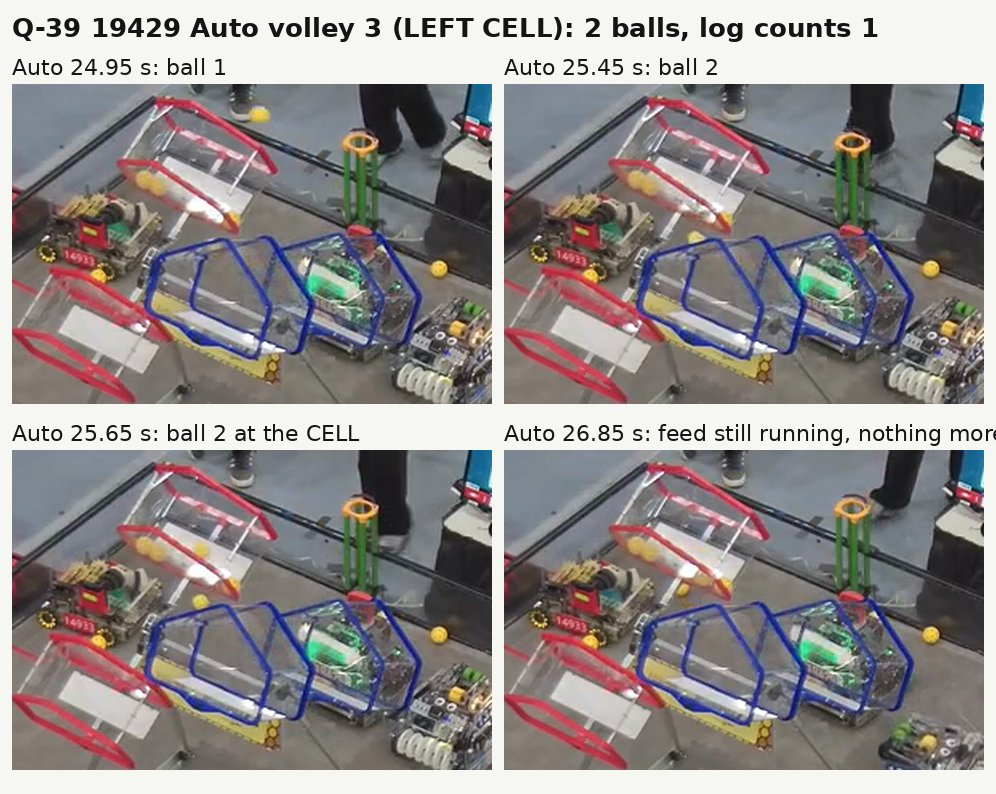
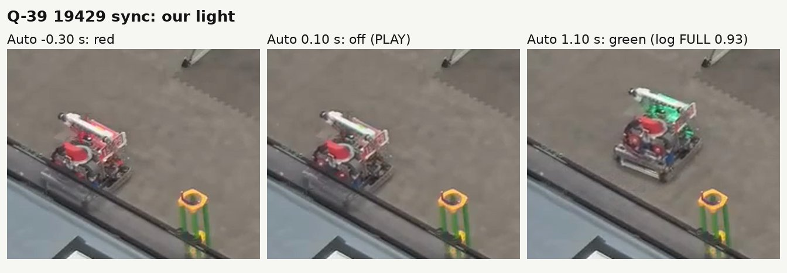
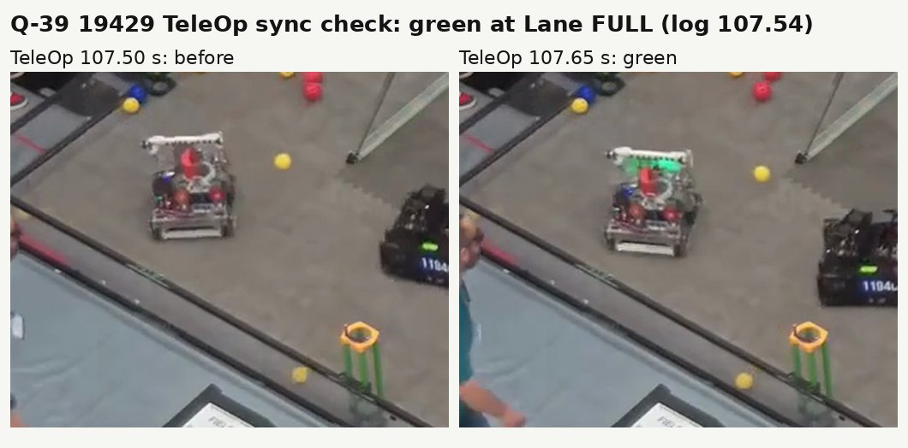
launchAllFeedS 3.5 s. With volley 3 ending at 27.05 s, the park leg had under 3 s and the OpMode stopped ~20 in short of RIGHT_PARK. Compare Q-28 20245 on the same Auto: every volley ended at its 4th shot (~2.2 s), and it was parked by 25 s. The guard plans the volley's planned length, and a full 3.5 s feed on a volley that fires 1–2 pieces seems to break that plan. Worth checking how the guard's plan treats a volley that will not reach 4 shots.--play-at 39.65.| Card (Auto s) | Log says | Video shows | Agree? |
|---|---|---|---|
| SpinUp + path to RIGHT_AUTO_HIVE (0.0–1.1) | Lane FULL at 0.93, "under the sensor 136.9 s" (a preload sat on the sensor through INIT) | drives up | yes |
| LaunchAll preloads (1.1–4.6) | 3 counted (2.18, 2.94, 3.86), gaps of 0.75 and 0.94 s; fed the full 3.51 s; lane 4→1 | 3 balls leave at ~2.1, ~2.8 and ~3.4 into the red RIGHT CELL; no 4th through Auto 4.6 | yes, 3. One preload stayed aboard |
| Red TIP 1 | – | red TIP counter 0→1/4 and red 0→20 at file ~49–50.5 (Auto ~9.5–11), ~6–7 s after the last ball. The red CELL in front swings at file ~48.5–49.5 | consistent with our volley 1. A partner shot into the same CELL: CAN'T TELL |
| path + PickFlower red WALL (4.6–10.1) | stick down on the drive in; IN 0.97 s, stalled 0.7 in short; dwell 2.01; lane 1→3 | the pick happens | count CAN'T TELL |
| path BACKWARD to LEFT_AUTO_HIVE, CELL check (10.1–13.7) | CellUp after 0.02 s | – | – |
| LaunchAll (13.7–17.4) | 3 counted (15.11, 15.52, 15.96); 4 by dips; fed the full 3.51 s; lane 3→0 | balls go into the LEFT CELL at file ~54.3–56.0 (Auto ~14.6–16.4): at least 3 clear, likely 4 | the counter undercounts by about 1 |
| path + PickFlower red SCORING (17.4–22.0) | IN 1.10 s, stalled 1.9 in short; DWELL cut at 1.22 s by "Lane: FULL" with the tracker at 1; lane 0→1 | – | count CAN'T TELL |
| path to LEFT_AUTO_HIVE, CELL check (22.0–23.4) | CellUp after 0.08 s | – | – |
| LaunchAll (23.4–27.1) | 1 counted (24.79); 2 by dips; fed the full 3.52 s | 2 balls (Auto ~24.9 and ~25.5); nothing more through the end of the feed (still) | counter low by 1; dips right |
| LEFT CELL TIP | – | red stays at 1/4 for the rest of Auto | no TIP |
| path to RIGHT_PARK (27.1–30.0) | the park leg started at 27.05 s; the OpMode stopped at 29.97 with the pose at (33.5, 105.6). RIGHT_PARK is (14.5, 98.7), so it stopped ~20 in short | the robot is behind the HIVE and other robots at the end of Auto (file 69.3–70.5) | in the PARK zone or not: CAN'T TELL. Red got +3 at file ~73 (25→28), not +5. Whose points: CAN'T TELL |
TeleOp ran Basic Drive (TeleOp PLAY = log 229.3 s). The log's own volley table counts 6 volleys and 13 shots.
| Event (TeleOp s) | Log says | Video shows | Agree? |
|---|---|---|---|
| Volley 1 (3.1–4.7) | Circle with aim +138° (odometry) BLOCK, launcher spun up from 0, 1 shot at 4.68 (range 45 in, pose) | – | CAN'T TELL |
| Volley 2 (16.8–17.8) | aim +14.3° BLOCK, then 1 shot | – | CAN'T TELL |
| FLOWER pick attempts on the blue WALL FLOWER (26.0, 33.1) | stopped in IN (released) and in LINE_UP (sticks moved) | – | CAN'T TELL |
| Volley 3 (47.9–50.4) | 2 shots (49.94, 50.41) | – | CAN'T TELL |
| Red TIP 2 | – | red 1→2/4 (28→48) at file ~133–135 (TeleOp ~55–57) | consistent with volley 3 (~5 s lag); attribution CAN'T TELL |
| GARDEN gather (57.3–59.1) + intake (63–69) | gather stopped in LINE_UP by the sticks; 3 REJECT RED_NECTAR (TeleOp 65.0, 66.5, 68.1); a 1.1 s FULL at 66.8 that cleared at once (tracker 2); "ejected, count reset" | – | CAN'T TELL |
| 72.3 | fire refused: outside the firing arc (turret −97°, aim +112°); indicator FLASH 0.34 s | – | – |
| Volley 4 (73.7–74.7) | 3 shots (TeleOp 73.72, 74.19, 74.67) | balls fly toward the red end at file ~152–153.6 with several robots near. Which robot fired: CAN'T TELL | – |
| FLOWER pick attempt (84.3) | blue WALL FLOWER, released in LINE_UP | – | – |
| Volley 5 (94.7–97.0) | aim −48.6° BLOCK, then 3 shots | – | CAN'T TELL |
| Lane FULL at 107.54 (tracker 3) | – | green at TeleOp 107.6 (still) | yes |
| Volley 6 (108.2–110.8) | 3 shots (109.47, 109.92, 110.82) | – | CAN'T TELL |
| Red TIP 3 | – | red 2→3/4 (48→68) at file ~194 (TeleOp ~116) | ~5 s after volley 6, consistent; attribution CAN'T TELL |
| Endgame park | last push at (25.4, 125.1) at TeleOp 119.7 | the red park icons show one tick and one cross at the end | which robot parked: CAN'T TELL |
| Odometry | Pinpoint FAULT_BAD_READ ×5 (TeleOp 14.8, 44.4, 51.7, 62.6, 91.9), each READY within 15–60 ms | – | not lost |
Log: events/2026-11-fruitport:20245/matches/2026-11-21_15-20-25_R-Solo_11-19_10_35PM.wpilog.gz (Auto R-Solo, TeleOp Basic Drive). Final score on the overlay: Red 96, Blue 56; both red robots shown parked.
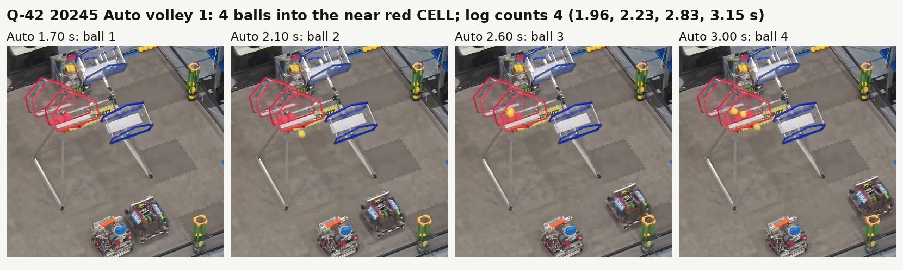
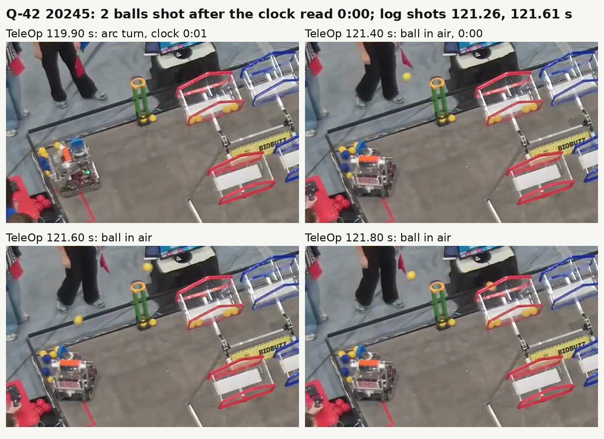
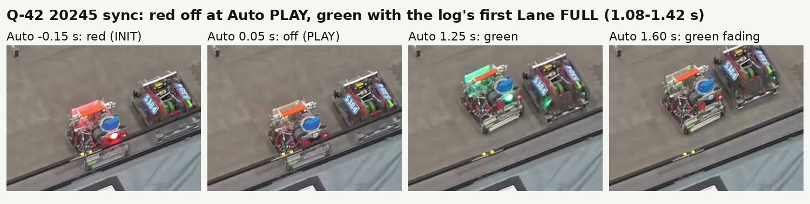
HIVE (RED): TRANSITION was logged at Auto 26.2 s, close to the second TIP on the overlay. The log's TIP sighting and the overlay agree within about 1 s.--play-at 39.10.| Card (Auto s) | Log says | Video shows | Agree? |
|---|---|---|---|
| SpinUp + path to RIGHT_AUTO_HIVE (0.0–0.84) | Drives 0.84 s and holds at (59.2, 20.9). | It moves forward from the start by the audience wall, inside the first 0.7 s. | Yes |
| LaunchAll (0.8–3.1) | 4 shots counted (1.96, 2.23, 2.83, 3.15). Dips: "from a standstill". | 4 balls leave at about 1.8, 2.2, 2.7 and 3.1 s and land in the near red CELL (still ..._auto_v1). | Yes |
| (CELL) | HIVE RED goes to UNSEEN at 4.1 s. | Overlay: red 0 → 20 and the tipped-CELL icon 0/4 → 1/4 between 4.0 and 5.0 s. A red TIP right after our volley, about 1.5 to 2 s after the last ball. Most likely ours: it was the only red volley at that CELL we saw, but 16220 was not tracked. | — |
| Path to WALL_FLOWER_STAGING (3.1–4.8) | 1.62 s | It leaves at about 3.6 s, about 0.45 s after the log's card start (turn and accel), and drives to the red side wall. | Yes |
| PickFlower, red WALL (4.8–8.6) | Stalled 1.7 in short. Lane 0 → 3, FULL at 8.34 s. | Robot at the side-wall FLOWER. Green on at about 8.5 s, matching the 8.34 s FULL. How many pieces went in: CAN'T TELL (too small). | Yes (light) |
| Path BACKWARD to LEFT_AUTO_HIVE (8.6–11.6) | 3.03 s | It drives the length of the field to under the far red CELL. Still green at 11.5 to 12.4 s (FULL until 12.47 s). | Yes |
| Wait for TIP or CELL up (11.6) | CellUp after 0.03 s | — | — |
| LaunchAll (11.6–14.2) | 4 counted (12.95, 13.33, 13.78, 14.23); dips 4. | A stream of balls rises over the far red CELL at about 12.9, 13.4, 13.75 and 14.1 s, so about 4. Overlapping arcs make the count moderate-confidence. One ball is on the floor rolling away at about 14.5 s; whether it bounced out of the CELL: CAN'T TELL. | Yes (about 4) |
| Path to SCORING_FLOWER_STAGING (14.2–15.5), PickFlower red SCORING (15.5–18.5) | Stalled 2.8 in short. Lane 0 → 1 (→ 2 at 19.9 s). FULL at 17.95 s. | Robot at the far-wall FLOWER, green-lit at 18.5 s. Pieces taken: CAN'T TELL. | Yes (light) |
| Path to LEFT_AUTO_HIVE, LEFT CELL still up? (18.5–19.9) | CellUp after 0.21 s | — | — |
| LaunchAll (19.9–23.6) | Counter 3 (21.37, 21.77, 22.23); dips 4. Fed the full 3.5 s. | Balls rise from the robot under the far red CELL at about 20.9 to 21.3, 21.6 to 21.9, 21.9 to 22.3 and 22.4 to 22.6 s, so about 4, agreeing with the dips, not the counter. Balls on the floor below the CELL at about 23.2 s. | Counter low by 1; dips agree |
| (CELL) | HIVE RED TRANSITION at 26.2 s | Overlay: red 28 → 48 and CELL icon 1/4 → 2/4 at 24 to 25 s, so a second red TIP about 2.5 to 3 s after the last ball. Most likely the far (LEFT) CELL our volleys 2 and 3 went into. | — |
| Path to RIGHT_PARK (23.6–30) | Ends at (14.5, 98.7) at 25.7 s. | At 29.5 s the robot stands still by the red side wall, about three quarters of the way down the field, next to another robot. Whether it was inside a scoring park zone: CAN'T TELL. | Yes (position) |
The overlay also shows red +8 at about 11 s and +8 at about 27 s. What scored those: CAN'T TELL.
| When (TeleOp s) | Log says | Video shows | Agree? |
|---|---|---|---|
| 1.9–9.4, blue WALL FLOWER | Picks on the blue half, (118–139, 94–107). Two picks are stopped by the sticks. Lane 2 → 4. | Robot near the blue side wall, far half. | Yes |
| 7.41 Lane FULL | FULL 7.41–9.00 | Green from about 7.56 s | Yes |
| Volley 1 (Square → RIGHT_WALL_FAR), 12.6–15.0 | 3 shots (13.90, 14.37, 14.82); lane tracker said 4 | 3 balls at about 13.75, 14.25 and 14.72 s | Yes (3) |
| 17.1–21.3, blue AUDIENCE FLOWER | Stalled 2.7 in short; lane 1 → 3; FULL 21.31 | not checked | — |
| Volley 2 (Circle), 22.2–25.1 | 4 shots, one "with the lane counted empty" | Three robots overlap our robot in the crop. Count: CAN'T TELL. | CAN'T TELL |
| 27.0–29.9, red GARDEN gather | Line-up stalled against the wall, then reached | not checked | — |
| Volley 3 (Square → LEFT_CLOSE_HIVE), 41.5–44.8 | 5 shots (one more than the lane count, "a piece arrived with the lane counted full") | 4 to 5 balls rise over the far red CELL; the exact count is CAN'T TELL (the CELL frame overlaps the arcs) | Roughly |
| Volleys 4–8 (59.9, 69.5, 80.8, 92.0, 111.0) | 3, 2, 4, 4, 3 shots | not counted (time) | — |
| 64–68, 116–117: Square to LEFT_WALL_HIVE | Two Square presses released early with 0 shots (55.6, 57.2), then fired | not checked | — |
| Volley 9 (Circle, arc turn), 119.8–121.6 | Arc turn +65° at 119.80 s; shots at 121.26 and 121.61 s | The overlay clock reads 0:00 from TeleOp 120.0 s. Our robot (far red corner) turns at 119.8 to 120.2 s, then two balls are in the air at about 121.2 to 122.0 s, after 0:00 (still ..._late_shots). Where they landed: CAN'T TELL. | Yes: shots after the buzzer |
| Endgame | Drive stops at 120.1 s; pose (14.5, 121) | The robot sits in the far red corner by the red side wall. The overlay shows both red robots parked. | Yes |
1. Sync helper: it put Auto PLAY at 41.10 s; the real PLAY is 39.10 s. It found its "light" on a red object in the drivers' area. Corrected with --play-at 39.10. 2. Auto volley 3 (19.9–23.6 s): the shot counter says 3, but the dips and the video say about 4. This is the known counter undercount after a FLOWER pick. 3. Lane tracker: TeleOp volley 1 started with the tracker at 4, but 3 balls left (counter 3, video 3). A count was wrong somewhere, or a piece stayed in. 4. Path start after a volley: the robot visibly starts moving about 0.45 s after the logged path start (Auto 3.1 s). This is consistent with a turn or accel, not a sync error.
Log: events/2026-11-fruitport:19429/matches/2026-11-21_16-28-50_L-NoCross_11-18_3_40PM.wpilog.gz (Auto L-NoCross; INIT options: wait for TIP 1 until 9 s, if no TIP 1 = CROSS AND FIX IT; TeleOp Basic Drive). Final overlay: 76–76, both red robots shown parked. The field camera is Field 1, rotated from Q-42: the red drivers are at the top left.
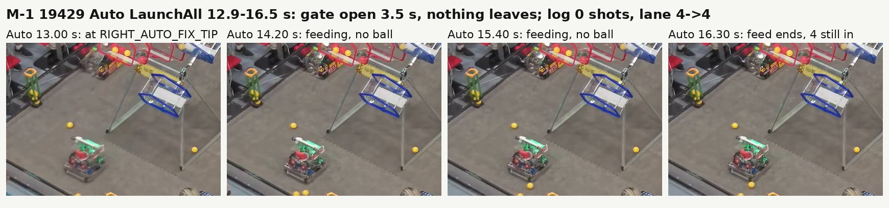
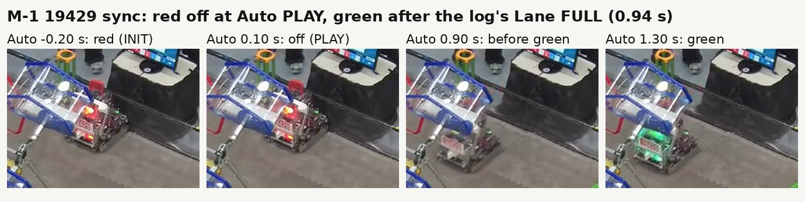
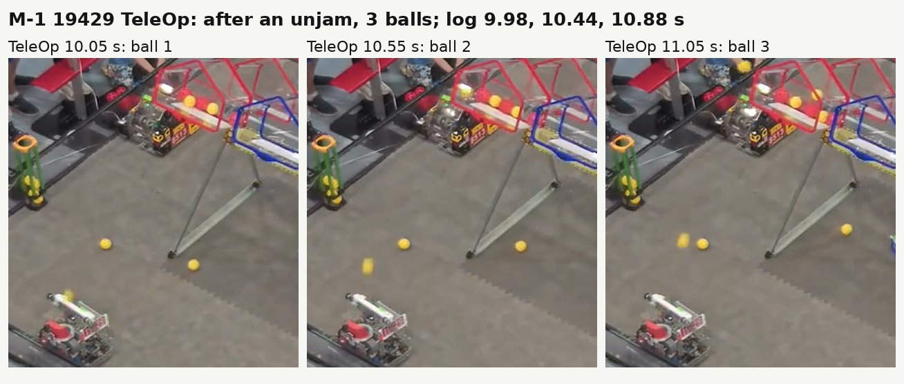
| Card (Auto s) | Log says | Video shows | Agree? |
|---|---|---|---|
| SpinUp + path to LEFT_AUTO_HIVE (0.0–0.8) | Arrives at (61.4, 120.5) | It moves a short way from its start by the far blue CELL | Yes |
| Wait for TIP or CELL up, with SpinUp (0.8–8.9) | No TIP; gives up at 9.0 s on the match clock. Lane FULL the whole time ("piece under the sensor 55.2 s", meaning a piece had sat under the sensor since INIT). | Sits still and green-lit. Red's tipped-CELL count stays at 0 all Auto, so no TIP 1 came from the partner. | Yes |
| Path under the HIVE to RIGHT_AUTO_FIX_TIP (8.9–12.9) | 4.01 s; ends at (55.3, 25.7) | Crosses under the HIVE to the other end and stops at about 12.8 s | Yes |
| RIGHT CELL up? | RightCellUp after 0.02 s | — | — |
| LaunchAll (12.9–16.5) | Gate open 3.5 s with the launcher at speed (L 1540, R 1520, no dip). 0 shots; lane 4 → 4. Feeder and prefeed powered. | Nothing leaves the robot for the whole card (still ..._auto_nofire) | Yes: the preloads never fired |
| Guard: no time for the next volley, parking now (16.5) | Path to the park starts at 16.5 s | The robot starts moving at about 17.3 s, 0.8 s after the logged start, then drives under the HIVE to behind the far red CELL | Roughly (late start on video) |
| Park (16.5–30) | Ends at (14.5, 117.4) at 22.0 s | From about 22 s it sits partly hidden behind the far red CELL and does not move again. Whether it was in the park zone: CAN'T TELL. | Yes (position) |
| When (TeleOp s) | Log says | Video shows | Agree? |
|---|---|---|---|
| 0.91 Lane FULL (carried from Auto) | FULL until 8.21 s (cleared by the reverse) | not checked | — |
| Circle 5.52 / 7.70 / 8.64; reverse 8.21–8.60 | 5.52: spin-up. 7.70: "fired", but no shot. 8.64: blocked. | not checked | — |
| Volley 1, 9.98–10.88 | 3 shots, all "with the lane counted empty" | 3 balls leave at about 10.0, 10.5 and 10.95 s, from by the near wall toward the red CELL (still ..._teleop_unjam) | Yes (3) |
| 16.7–18.9, red WALL FLOWER | Reached; lane 0 → 1 (then 4 by 25.8) | not checked | — |
| 20.77 Lane FULL | FULL 20.77–22.59 | Green from about 21.0 s | Yes |
| Volley 2, 31.89–33.53 | 4 shots | Our robot is behind the blue CELLs at the far end. Count: CAN'T TELL. | CAN'T TELL |
| 35.0–37.9, red SCORING FLOWER | Reached; lane 0 → 4 | not checked | — |
| Volley 3, 43.00–44.43 | 4 shots | not counted | — |
| 52.9–68 | Repeated Circles blocked or "fired" with no shots. The launcher reverses at 57.1–60.6 and 65.3–67.9 ("lane: ejected"). Launcher speed falls to 0 to 360 in several feeds (158–168 log s). | not checked: a jam or eject period | — |
| 69.3–72.9, blue AUDIENCE FLOWER | Path done 1.6 in short; lane 1 → 3; two pushes at (86.7, 13–15) | not checked | — |
| Volley 4, 83.88–84.41 | 2 shots (lane had 3) | not counted | — |
| 86.4–103 | A BLUE NECTAR is rejected at the entrance, and "a reject did not clear it" twice (90.37 and 98.22 s). More reverses at 87.2–89.4, 94.2–97.2 and 102.5–103.7. Arc turn at 101.84 s. "not fed: unjam is held" at 103.28 s. No shots after 84.4 s. | not checked | — |
| Endgame | Drives until about 120 s; ends at (17.9, 100.4) | The overlay shows both red robots parked. Which check is ours: CAN'T TELL. | — |
FAULT_BAD_READ twice (TeleOp 1.72 s and 48.65 s), each READY again within 0.05 s. Not lost.1. Sync helper: wrong light (on the blue side), so wrong PLAY (43.27 s against the real 39.38 s). 2. Park path start: the log starts the park path at 16.5 s, but the robot is seen moving only from about 17.3 s. Is that a slow start under the HIVE, or something holding the robot? CAN'T TELL. Every other event in Auto lines up within 0.1 to 0.2 s. 3. TeleOp 7.70 s: the log says "fired; gates clear", but no shot came until after the reverse at 8.2 to 8.6 s (log, consistent with the video).
Log: events/2026-11-fruitport:20245/matches/2026-11-21_16-34-53_R-NoCross_11-18_9_06PM.wpilog.gz (Auto R-NoCross; INIT options: wait for TIP 2 until 20 s, if no TIP 2 = WAIT FOR PARTNER; TeleOp Basic Drive). Final overlay: Red 196, Blue 71. Both red robots shown parked; blue has one park ✗.
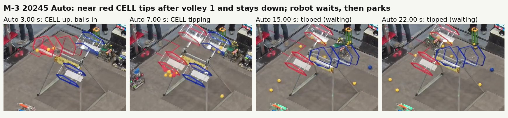
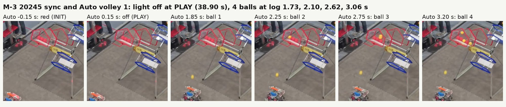
--play-at 38.90.| Card (Auto s) | Log says | Video shows | Agree? |
|---|---|---|---|
| SpinUp + path to RIGHT_AUTO_HIVE (0.0–0.75) | Arrives at (59.2, 20.9) | It moves forward from the near wall at once | Yes |
| LaunchAll (0.7–3.1) | 4 shots counted (1.73, 2.10, 2.62, 3.06) | 4 balls into the near red CELL (still ..._sync_volley1) | Yes |
| (CELL) | HIVE RED UNSEEN from 4.0 s | Overlay: red 0 → 20 and the CELL icon 0 → 1 at about 7 to 8 s. The near red CELL is seen tipping at about 7 s and stays tipped to the end of Auto (still ..._cell_wait). TIP lag about 4 s from the last ball. Most likely our TIP: our 4 balls were in that CELL, and 10255 was not tracked. | — |
| Path to WALL_FLOWER_STAGING + PickFlower red WALL (3.1–8.3) | Stick down on the drive in. Stalled 1.5 in short. Lane 0 → 2, then 3 at 12.6 s. FULL 8.29 s. | Robot goes to the red side-wall FLOWER. Pieces taken: CAN'T TELL (too small). | — |
| Path to RIGHT_AUTO_HIVE (8.3–9.9) | 1.58 s | It returns near the start, green-lit | Yes |
| Wait for TIP or CELL up (9.9–19.8) | Times out at 20.0 s on the match clock. HIVE RED UNSEEN all through (4.0–24.4 s). | The near red CELL stays tipped and the robot sits still (green from the FULL at 13.59 s). Red's CELL count stays 1, so no second red TIP. | Yes |
| RIGHT CELL up by 23 s? (19.8–22.8) | Times out | The CELL is still tipped | Yes |
| Path to RIGHT_PARK (22.8–30) | Ends at (14.5, 98.7) at 25.85 s; 3 pieces still in the lane | It drives to by the far red CELL near the red drivers' wall, green-lit, about 25 to 27 s. In the park zone: CAN'T TELL. | Yes (position) |
| When (TeleOp s) | Log says | Video shows | Agree? |
|---|---|---|---|
| 0.90 Lane FULL (carried from Auto) | Cleared at 3.17 s | not checked | — |
| Volley 1 (Circle), 3.55–4.88 | 4 shots, all "with the lane counted empty" (the 3 Auto leftovers plus 1) | Our robot is hidden behind the blue CELLs at the far end. Balls are seen rising over the far red CELL at about 3.5 to 4.8 s; exact count: CAN'T TELL. | CAN'T TELL (count) |
| 11.37 Lane FULL | 11.37–11.84 | Green about 11.64–11.94 s | Yes |
| Volley 2, 12.37–13.65 | 4 shots | About 4 balls at about 12.4, 12.8, 13.2 and 13.7 s, from by the near wall (moderate confidence: small in frame) | Yes |
| 15.9–17.0 | RED NECTAR in, then "ejected" | not checked | — |
| Volleys 3–10 (27.9, 41.5, 48.5, 56.8, 71.9, 93.0, 105.0, 115.9 s) | 3, 3, 1, 4, 4, 4, 4, 3 shots | not counted (time) | — |
| 32.1–35.3, 74–81 | Picks at the blue WALL and blue AUDIENCE FLOWERs (lane 0 → 1, 0 → 3) | not checked | — |
| 87.9, 91.2 | "lane: ejected" twice | not checked | — |
| After 120 s | Shot 35 at 121.38 s. Circle "fired" again at 127.46 s. The log runs to 128.45 s. | The overlay clock is 0:00 from TeleOp 119.8 s. The robot rotates at about 120.6 to 121.2 s, and a ball rises near the far red CELL at about 121.5 s. That it is ours is likely, but CAN'T TELL for certain. The 127.46 s press: not checked. | Likely: a shot after the buzzer |
| Endgame | Ends at (87.2, 124.7), on the blue half, far end | The robot is by the far blue CELLs at 0:00. The overlay shows both red robots parked. | — |
FAULT_BAD_READ once (TeleOp 79.40 s), READY 0.05 s later. Not lost.1. Sync helper: "scoreboard only" at 38.52 s. The real PLAY is 38.90 s (light and four shots). 2. The robot's Auto ran its full 30 s while the field's Auto ended 0.4 s earlier. The robot was parking (path end 25.85 s), so the overlap did nothing. 3. None found between the log and the video in Auto beyond the helper's sync. The log's CELL state (RIGHT not up to 23 s) matches the tipped CELL on video.
Log: events/2026-11-fruitport:19429/matches/2026-11-21_16-59-40_R-Solo_11-19_10_35PM.wpilog.gz. Build Fruitport @ 7edec46c31, Auto R-Solo (blue run). Battery 13.27 V at INIT. Times are seconds after our PLAY: A = Auto PLAY (log 183.34 s), T = TeleOp PLAY (log 221.53 s). The score at the TeleOp buzzer frame was red 116, blue 96 (we lost).
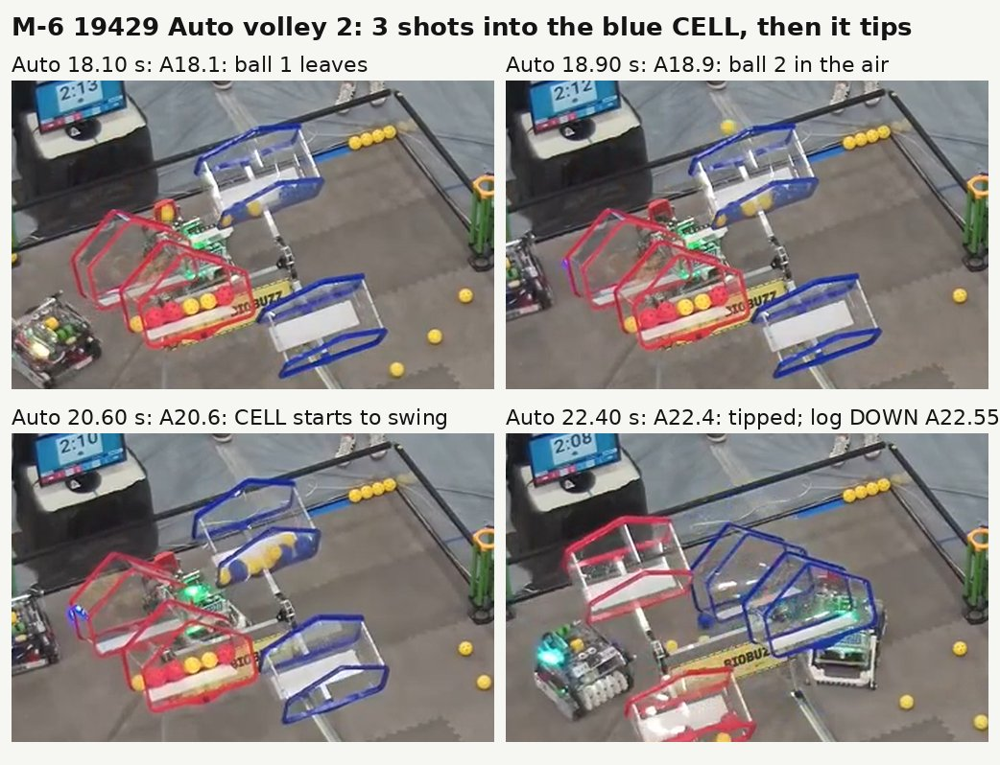
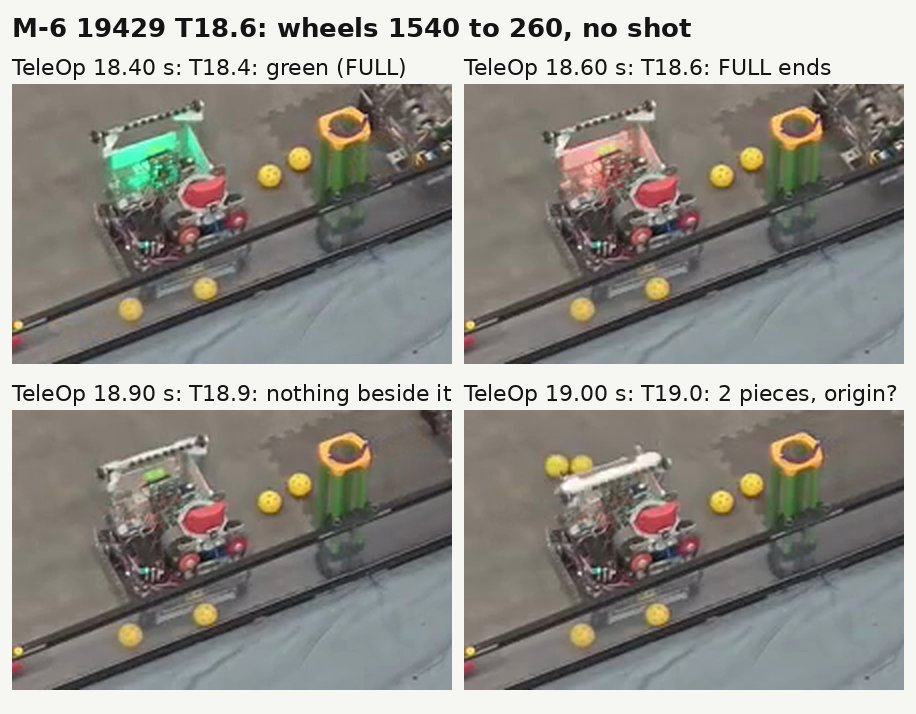
--play-at 39.18 (Auto PLAY = 39.18 s into video.mp4). The helper could not find the light by itself (the robot starts at the back of the field, partly behind the red HIVE end). The first guess from the scoreboard (38.45 s) was 0.73 s early.| Card (A s) | Log says | Video shows | Agree? |
|---|---|---|---|
| SpinUp + path to RIGHT_AUTO_HIVE (0.0–1.4) | Drives up from the blue right start. Gate opens on the approach, 0.10 s ahead of launch speed. | Drives up behind the red CELL end of the HIVE. | yes |
| LaunchAll 1 (1.4–4.6) | Fed for the full 3.52 s and did not end at a 4th shot. Counter 2 (A3.10, A4.20), dips "?". Lane 4→2. Battery dipped to 10.86 V. | 2 balls seen rising to the blue CELL (A3.0–3.4 and A4.2–4.4). The robot is half hidden behind the red CELL, so a third is CAN'T TELL, but the lane count still read 2 afterward. | yes: 2 out, 2 stayed in |
| path to WALL_FLOWER_STAGING (4.6–6.4) | — | The robot leaves the HIVE. | yes |
| PickFlower (6.4–9.8) | Picked the blue WALL FLOWER and stalled 0.8 in short. Lane 2→3, Lane FULL from A8.92. | Not checked closely. | — |
| path BACKWARD to LEFT_AUTO_HIVE (9.8–13.5), Wait for TIP or CELL up (13.5–14.3) | Crossed to the left end. The wait timed out ("750 ms passed"), meaning the CELL was not seen up. | Not checked closely. | — |
| path to RIGHT_AUTO_HIVE (14.3–17.2), RIGHT CELL still up? (17.2–17.4) | CellUp after 0.10 s. | The robot is back under the near end. | yes |
| LaunchAll 2 (17.4–20.9) | Counter 3 (A18.24/18.70/19.24), dips 1. Lane 3→0. | 3 balls go into the blue CELL, which already held 2. The CELL starts to swing at about A20.6 and has tipped by A22.4. The log reads BLUE_SCORING DOWN at A22.55. TIP lag is about 3 s (last ball leaves about A19.5, CELL settled about A22.4). | counter yes, dips undercount (1 vs 3) |
| path to RIGHT_PARK (20.9–) | Ends at (127.0, 42.4, 180°), still from about A25. | At A29.6 the robot is still at the right side wall beside partner 8513, green light on. Whether it scored PARK: CAN'T TELL (the scoreboard does not show it per robot). | position yes |
Score at the end of Auto (A29.6): 28–28.
| When (T s) | Log says | Video shows | Agree? |
|---|---|---|---|
| T0.93 | Lane FULL (green) | Green light seen. | yes |
| T14.7–18.8 | Driver's Circle. Gate open 3.6 s with 1 piece in the lane. The launcher wheels fell from 1540 to about 260 ticks/s at T18.6, the lane went 1→0, and 0 shots were counted. | At T18.6 the light changes from green. No ball arc is seen. At T19.0 two pieces are lying beside the robot that were not there at T18.9. | no shot, matches. What stalled the wheels: CAN'T TELL from outside. |
| T27.98–29.05 | 3 shots counted (target 1526, 48 in by camera) | Not counted on video. | — |
| T38.77 | 1 shot. Then at about T39.1 the wheels dropped to 80–120 ticks/s during a 0.3 s feed. | Not checked. | — |
| T60.0–61.2 | 4 shots counted (1516, 49–50 in by camera) | 4 balls seen rising to the blue CELL by the scoreboard (T59.9–61.2). | yes |
| T71.1–72.0 | 3 counted | Not counted on video. | — |
| T89.7–90.6 | 3 counted | Not counted on video. | — |
| T99.2–99.7 | 2 counted (one dip only 10 ticks/s) | Not counted on video. | — |
| T116.7–117.1 | 2 counted | Not counted on video. | — |
| Endgame | The pose is still moving at T119.5–121: (91.7, 117.6) → (111.2, 92.6). | The clock reads 0:00 at T120.5. Where our robot is and whether it parked: CAN'T TELL. | — |
There were no Pinpoint faults in this log. Counted TeleOp shots: 18.
..._auto_volley2_tip).Log: events/2026-11-fruitport:20245/matches/2026-11-21_16-58-32_R-NoCross_11-18_9_06PM.wpilog.gz. Build Fruitport @ 7edec46c31, Auto R-NoCross (red). Battery 13.54 V at INIT. A = seconds after Auto PLAY (log 129.41 s). T = seconds after TeleOp PLAY (log 167.48 s).
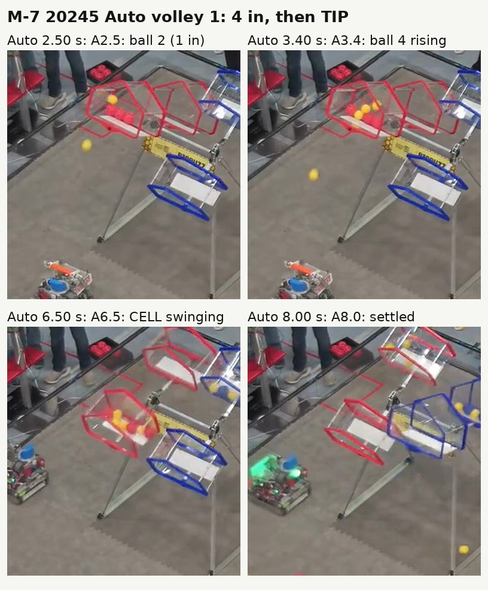
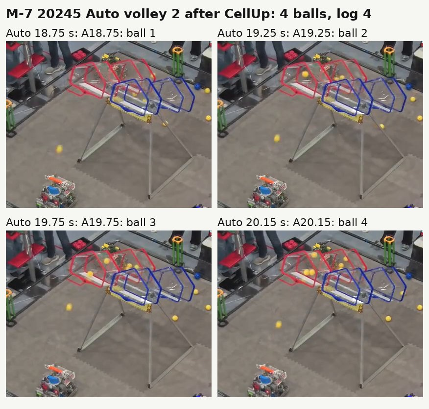
| Card (A s) | Log says | Video shows | Agree? |
|---|---|---|---|
| SpinUp + path to RIGHT_AUTO_HIVE (0.0–0.8) | (55.6, 7.7) → (59.7, 21.5) | Drives up to the near red end. | yes |
| LaunchAll 1 (0.8–3.3) | Ended at the 4th counted shot after 2.38 s. Counter 4. Lane 4→0. | 4 balls go into the near red CELL (A2.1–3.4). The CELL tips: it swings from about A6.0 and has settled by A7.5–8.0. Red goes 0 → 20 between A6 and A8. TIP lag (last ball leaves about A3.3, CELL settled) is about 4.2–4.7 s. | yes |
| path to WALL_FLOWER_STAGING (3.3–4.8) | — | Drives to the side wall. | yes |
| PickFlower (4.8–7.9) | Picked the red WALL FLOWER and stalled 1.3 in short. Lane 0→2, Lane FULL from A7.31. | Green light at A8–10. Pieces got: 4, judged by the 4 fired in volley 2 with no other intake. The lane count read low (2, then 3 at A13.0). | count is low |
| path to RIGHT_AUTO_HIVE (8.0–9.5) | — | Back at the near end. | yes |
| Wait for TIP or CELL up (9.5–17.9) | CellUp after 8.38 s. RED_AUDIENCE was read UP at A17.89. | The partner's TIP at the far red CELL swings from about A14 and settles about A16.5–17.0. That swing turns our near CELL back up, and red reaches 40 by A19. | yes. The read came about 1 s after the visible settle. |
| LaunchAll 2 (17.9–20.1) | Ended at the 4th counted shot after 2.14 s. Counter 4, dips 4. | 4 balls leave (A18.75, 19.25, 19.75, 20.15) toward the near red CELL. | yes |
| Guard → park (20.1–) | "no time to park after it" (the next volley plus the park would end at 33.6 s), so it parks from the spot it is on. Ends at (14.4, 99.1, 0°) = RIGHT_PARK by about A25. | From about A23.5 the robot sits still in the top-left corner under the red end of the HIVE until A29.6. Whether it scored PARK: CAN'T TELL from the scoreboard. | position yes |
Score at the end of Auto (A29.6): red 56, blue 36.
Counted shots by volley (log), against video where it was checked:
| When (T s) | Log says | Video shows | Agree? |
|---|---|---|---|
| T8.43–10.23 | Lane FULL | Green T8.6–10.2 (the robot is on the left side, near the wall). | yes |
| T9.0 Circle | Gate open 0.8 s, 0 shots (the gates first blocked on speed and aim) | Not checked. | — |
| T13.8 | 3 counted at T15.0–16.0 from (50.5, 121.6), 41 in by camera | Not counted on video. | — |
| T22.6 | Counter 1, 2 dips (T23.6, T24.4) | Not counted. | — |
| T32.8 | 4 counted (T33.3–34.9), 39–40 in | Not counted. | — |
| T49.3 | Square to LEFT_CLOSE_HIVE, 4 counted (T51.4–52.8) | Not counted. | — |
| T61.6 | 4 counted (T62.9–64.3) from (55.6, 11.8), 49 in | 4 balls seen rising from the robot to the near red CELL (T63.0–64.2). | yes |
| T69.7 | Square to LEFT_CLOSE_FAR, 2 counted | Not counted. | — |
| T83.1 | 4 counted (T84.4–85.8) | Not counted. | — |
| T94.7 | Counter 1, 2 dips | Not counted. | — |
| T103.5 | 3 counted | Not counted. | — |
| T112.3 | 1 counted | Not counted. | — |
| T120.0 Circle | At T121.5, "outside the firing arc, fed anyway: the arc is not enforced on this robot". Gate 0.6 s, 0 shots. | The clock reads 0:00 at T120.3. From T120.2 to T121.6 the robot sits in the bottom-left corner beside its partner, and no ball is seen leaving. | yes, no shot |
Pinpoint: FAULT_BAD_READ at T41.5, T52.8 and T71.4. PinpointTrust stayed TRUSTED all match, so these were blips, not a lost pose.Log: events/2026-11-fruitport:20245/matches/2026-11-21_17-35-45_R-NoCross_11-18_9_06PM.wpilog.gz. Build claude/fervent-goldberg-md9thd @ bf87cfb1ed. This is not the Fruitport build that M-7 ran (7edec46c31). Auto R-NoCross (red). Battery 13.63 V at INIT. A = seconds after Auto PLAY (log 135.25 s). T = seconds after TeleOp PLAY (log 173.62 s).
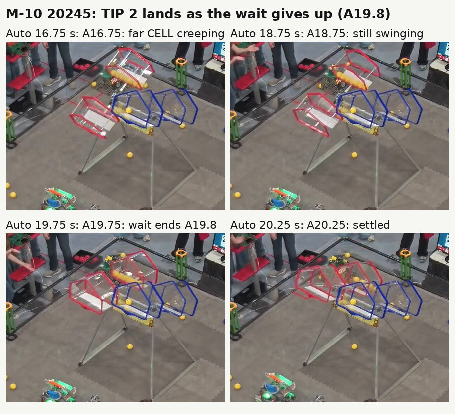
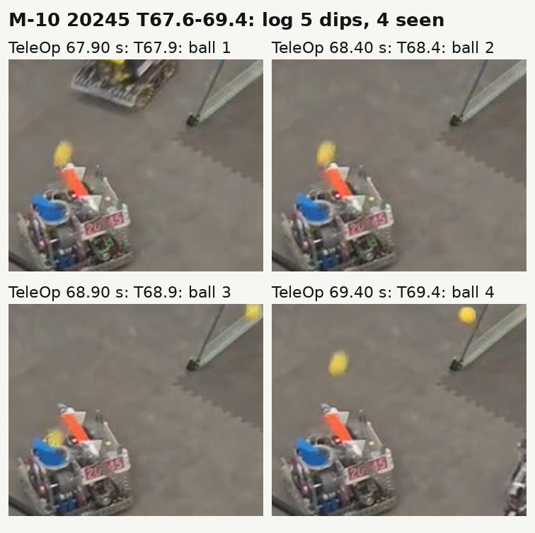
claude/fervent-goldberg-md9thd), not the event build M-7 used.| Card (A s) | Log says | Video shows | Agree? |
|---|---|---|---|
| SpinUp + path to RIGHT_AUTO_HIVE (0.0–0.8) | (55.6, 7.7) → (59.7, 21.8). Battery sagged to 9.15 V on the spin-up. | Drives up to the near red end. | yes |
| LaunchAll 1 (0.8–3.6) | Ended at the 4th counted shot after 2.69 s. Counter 4. | 4 balls go into the near red CELL (A2.25–3.45). The CELL tips: it swings at A6.0–7.0, and red is 20 by A7.0. TIP lag (last ball leaves about A3.5) is about 3.5 s. | yes |
| path to WALL_FLOWER_STAGING (3.6–5.2) | — | Drives to the side wall. | yes |
| PickFlower (5.2–8.9) | Picked the red WALL FLOWER and stalled 1.4 in short. Lane 0→3, Lane FULL from A9.76. | Green at A10. Pieces got: 4. The robot carried them to TeleOp and fired 4 on video at T3.9–5.0. The lane count read 3 until A28.06. | count is low |
| path to RIGHT_AUTO_HIVE (8.9–10.5) | — | Back at the near end. | yes |
| Wait for TIP or CELL up (10.5–19.8) | Gave up at "20.0 s on the match clock" after 9.30 s. | The partner's TIP 2 at the far red CELL was arriving as the wait gave up. It creeps from about A16.75, is still swinging at A18.75 and A19.75, and has settled by about A20.25. Red goes 20 → 40 between A18 and A20. The log reads RED_AUDIENCE UP at A20.26, 0.46 s after the wait ended. | yes, a near miss |
| path wall side to LEFT_AUTO_OFFSET (19.8–23.5), LEFT CELL still up? (23.5–24.2) | It took the "CROSS AND FIX IT" branch. The check timed out ("750 ms passed"): the left CELL was not seen up, which is right, since the partner had just tipped it. | The robot crosses to the far end. | yes |
| path to RIGHT_PARK (24.2–) | At (13.1, 98.9) by A26, still to A30+. Lane 3→4 at A28.06 while parked. | The robot sits still under the red end of the HIVE, top-left, A27.8–29.9. Green flickers at A28/A29 (the lane FULL calls). Whether it scored PARK: CAN'T TELL. | position yes |
Score at the end of Auto (A29.9): red 56, blue 36.
| When (T s) | Log says | Video shows | Agree? |
|---|---|---|---|
| T2.3 | Square to RIGHT_START (arrived 0.3 in off), 4 counted (T3.7–5.1), 53 in by camera | At least 4 balls rise from the robot to the near red CELL (T3.9–5.0). These are the 4 Auto pick pieces. | yes |
| T15.1 | 4 counted from (84.3, 130.7) | Not counted on video. | — |
| T22.2 | 3 counted | Not counted. | — |
| T36.9 | 3 counted (44 in) | Not counted. | — |
| T43.2 | Pinpoint: FAULT_BAD_READ (PinpointTrust stayed TRUSTED) | — | blip only |
| T50.6 | Square to LEFT_WALL_HIVE, gate opened on the approach, 1 counted. The sticks moved after 0.45 s. | Not counted. | — |
| T66.0 | Circle, gate 2.9 s, 5 counted (T67.56/67.97/68.46/69.01/69.44). Lane count 4→0. | 4 balls seen leaving the robot (T67.9, 68.4, 68.9, 69.4). A ball crosses the top of the crop at T70.25–70.35 but does not come from our robot. A 5th from us: not seen. | log one high, probably |
| T73.9 | Gate open 0.9 s, the wheels fell from 1560 to 140 ticks/s at T74.0 (lowest 120/20), 0 shots, lane 1→0. Pose (16.1, 118.8), turning. | The robot is under the red CELL at the left end and turning. What the piece did: CAN'T TELL (the CELL hides it). | — |
| T80.7 | Feed with 1 counted | Not counted. | — |
| T87.4 | 3 counted (57 in from (22.9, 14.1)) | Not counted. | — |
| T105.3–107.1 | Fired with the aim at −155° and −171° (behind the robot). At T107.4, "outside the firing arc, fed anyway". 2 counted, from (61.5–64.3, 134), the far end, 53 in. | Not counted. | — |
| Endgame | Still at (10.3, 119.3, 350°) from about T118. | At T120.6 the clock reads 0:00 and the score is 216–96. A robot sits still under the red end of the HIVE, top-left, consistent with the pose. Whether it scored PARK: CAN'T TELL. | position plausible |
Made overnight with the match-review skill from events/2026-11-fruitport logs and the stream video (tools/match-review/videos.json). In the tables, A and T are seconds after Auto PLAY and TeleOp PLAY in the log. CAN'T TELL marks what the stream camera did not show.